Notes
Table of Contents
- 1. Design Pattern
- 1.1. UML and Dependency
- 1.2. OO Principles
- 1.2.1. Liskov Substitution Principle
- 1.2.2. Encapsulate what varies
- 1.2.3. Program to interfaces, not implementations
- 1.2.4. Favor composition over inheritance
- 1.2.5. Loose couple
- 1.2.6. Interface Segregation Principle
- 1.2.7. Open-Close Principle
- 1.2.8. Dependency Inversion Principle
- 1.2.9. Principle of Least Knowledge
- 1.2.10. The Hollywood Principle
- 1.2.11. Single Responsibility Principle
- 1.3. Observer
- 1.4. Decorator
- 1.5. Factory
- 1.6. Singleton
- 1.7. Command
- 1.8. Adapter
- 1.9. Facade
- 1.10. Template Method
- 1.11. Iterator
- 1.12. Composite
- 1.13. State
- 1.14. Strategy
- 1.15. Proxy
- 1.16. Flyweight
- 2. Fluid Dynamics
- 3. Numerical Optimization
- 4. Probability and Statistics
- 5. Parallel Computing
- 6. Natural Language Processing
- 7. Principle of Programming Languages
- 8. Graph Theory
- 9. Algorithm
- 10. My Cheat Sheet
- 11. Java
- 12. C++
- 13. Others
1 Design Pattern
1.1 UML and Dependency
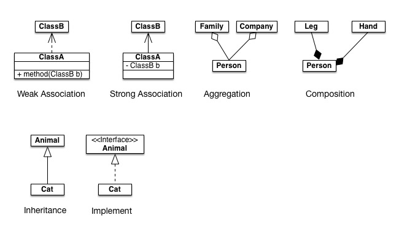
- Association
- Association is any kind of link or dependency between two classes.
- Dependency
- If A depends on B, then A has to change if B is modified, while B does not necessarily need to change if A is modified.
- We put the arrow nearby B to indicate that A depends on B.
- Weak Association
- Class A may be linked to Class B if one of its methods includes a parameter or return instance of Class B. B is local in Class A.
- Strong Association
- Class A holds a reference to Class B instance.
- B is global in Class A.
- Aggregation (Shared association)
- Compositions that happen dynamically
- Whole-part relationship.
- Person continues to exist after his Company dies.
- Person can also be aggregated to other classes.
- Composition (Non-shared association)
- Person owns Leg and Hand.
- Leg has no purpose without Person.
1.2 OO Principles
1.2.1 Liskov Substitution Principle
- Functions that use references to super-classes must be able to use objects of subclasses without knowing it.
- Sounds right in natural language does not always work in code.
- E.g. A square is a rectangle, but
Squarecannot be the subclass ofRectangle - A subclass contains all fields of its super-class and possibly more.
1.2.2 Encapsulate what varies
- Identify the aspects of your application that vary, and separate them from what stays the same, so that later you can alter or extend the parts that vary without affecting those that don't.
- All design patterns provide a way to let some part of a system vary independently of all other parts.
1.2.3 Program to interfaces, not implementations
The declared type of the variables should be a supertype (Java interface or abstract class), so that the objects assigned to those variables can be of any concrete implementation of the supertype, which means the class declaring them doesn't have to know about the actual object types.
interface Animal { String makeSound(); } class Dog implements Animal { public String makeSound(){return "bark";} } class Cat implements Animal { public String makeSound(){return "meow";} } public class DemoInterface { private static void printSound(Animal animal){ // We don't need to know if it is a dog or cat or whatever. System.out.println( animal.makeSound() ); } public static void main(String[] args){ // We can assign the concrete implementation object at runtime. printSound(new Dog()); printSound(new Cat()); } }
1.2.4 Favor composition over inheritance
- "Has-a" relationship can be better than "Is-a" relationship since it is more flexible.
- With composition, objects can dynamically change behaviors at runtime
- With inheritance, objects are fixed after compilation.
1.2.5 Loose couple
Strive for loosely coupled designs between objects that interact.
1.2.6 Interface Segregation Principle
- No clients should be forced to depend on methods it does not use.
- Split large interfaces into smaller and specific ones.
- E.g. Sign up and Login should be two separate interface.
1.2.7 Open-Close Principle
Classes should be open for extension, but closed for modification
1.2.8 Dependency Inversion Principle
Depend on abstractions; do not depend on concrete classes. 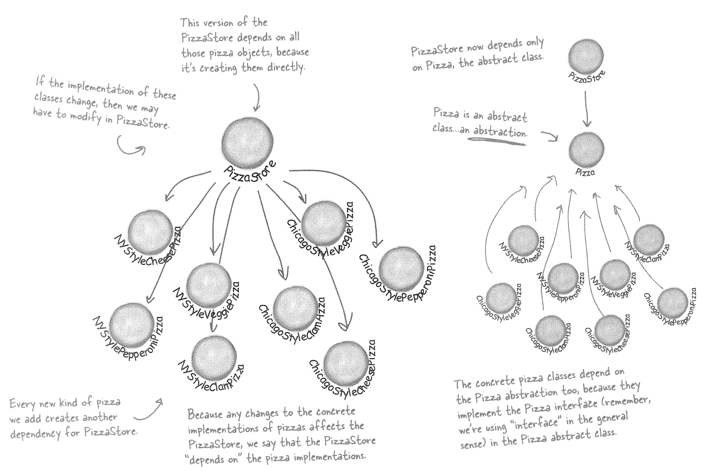
1.2.9 Principle of Least Knowledge
reduce the interactions between objects to just a few close friends.
1.2.10 The Hollywood Principle
- Don't call us; we'll call you.
- We allow low-level components to hook themselves into a system, but the high-level components determines when and how they are needed.
- Ref: Template Method Pattern.
1.2.11 Single Responsibility Principle
- Every responsibility of a class is an area of potential change.
- More than one responsibility means more than one area of change.
- A class should have only one reason to change.
1.3 Observer
- aka: publish/subscribe (pub/sub)
- Define a one-to-many dependency so that when one subject changes state, all its dependents are notified and updated automatically.
- Used in MVC: views register as observer so they can update when data changes.
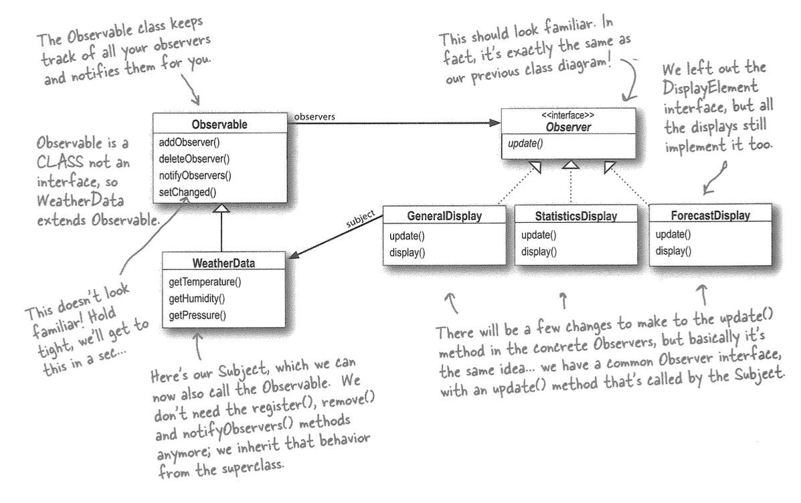
import java.util.Observable; import java.util.Observer; class MyData extends Observable{ // Data in the model-view paradigm private int data; public int getData(){ return data; } public void setData(int data){ this.data = data; super.setChanged(); super.notifyObservers(); } } class Display implements Observer{ @Override public void update(Observable o, Object arg){ MyData myData = (MyData) o; System.out.println("Updated: " + myData.getData()); } } public class DemoObserver{ public static void main(String[] args){ MyData myData = new MyData(); myData.addObserver(new Display()); myData.setData(5); } }
1.4 Decorator
- The decorator pattern attaches additional responsibilities to an object dynamically.
- Decorators provide a flexible alternative to subclassing for extending functionalities.
- Decorators have the same super type as the objects they decorate, and you can use one or more decorators to wrap the object.
- The decorator adds its own behavior before and/or after delegating to the object it decorates.
Componentcan be either an abstract class or in interface.
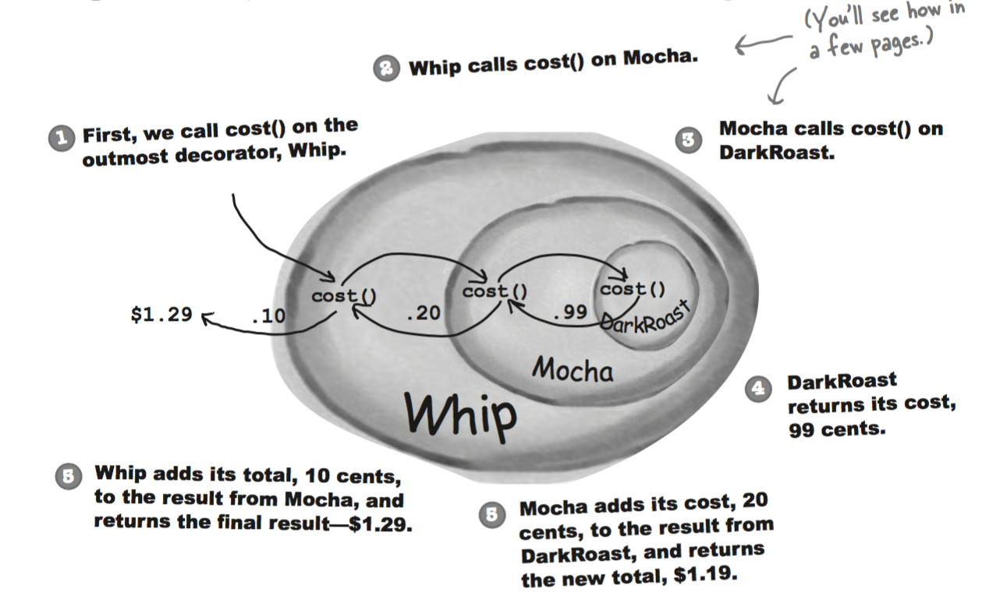 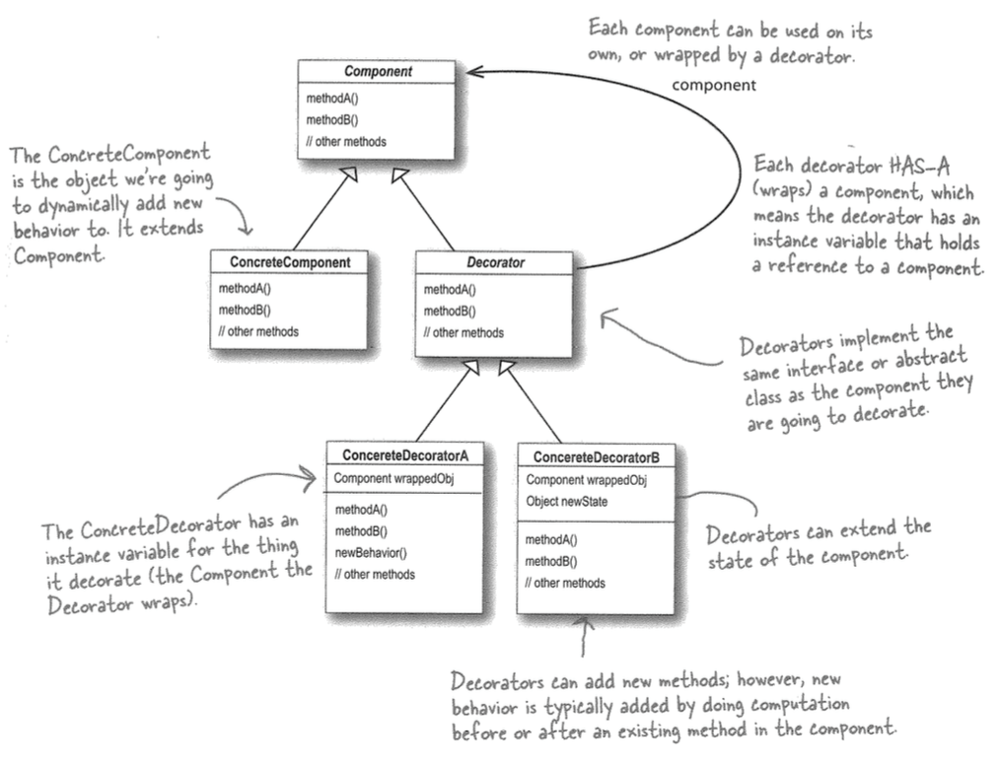
interface Beverage { // The component String toString(); } abstract class Decorator implements Beverage { protected Beverage wrappedObj; } class Coffee implements Beverage { // Concrete component public String toString(){return "Coffee";} } class AddMilk extends Decorator { // Concrete decorator public AddMilk(Beverage c){ wrappedObj = c; } public String toString(){ return wrappedObj.toString() + " + Milk"; } } public class DemoDecorator { public static void main(String[] args){ Beverage coffee = new Coffee(); System.out.println( coffee ); Beverage coffeeMilk = new AddMilk(coffee); System.out.println( coffeeMilk ); } }
1.5 Factory
1.5.1 Simple Factory
- In the Factory Pattern, we create objects without exposing the creation logic to the client and refer to newly created objects using a common interface.
- A Simple Factory is any method that makes objects for more than one possible classes.

enum PizzaType {Veggie, Cheese} interface Pizza { void show(); } class Veggie implements Pizza { public void show(){ System.out.println("Veggie pizza"); } } class Cheese implements Pizza { public void show(){ System.out.println("Cheese pizza"); } } class SimplePizzaFactory { public static Pizza makeShape(PizzaType t) { switch (t){ case Cheese: return new Cheese(); case Veggie: return new Veggie(); default: return null; } } } public class DemoSimpleFactory { public static void main(String[] args){ // No need to know the specific pizza types. Pizza s1 = SimplePizzaFactory.makeShape( PizzaType.Cheese ); s1.show(); Pizza s2 = SimplePizzaFactory.makeShape( PizzaType.Veggie ); s2.show(); } }
1.5.2 Factory Method Pattern
- The Factory Method pattern defines an interface for creating an object, but lets subclasses decide which class to instantiate.
- Factory Method lets a class defer instantiation to subclasses.
- The Creator class is written without knowledge of the actual products that will be created.
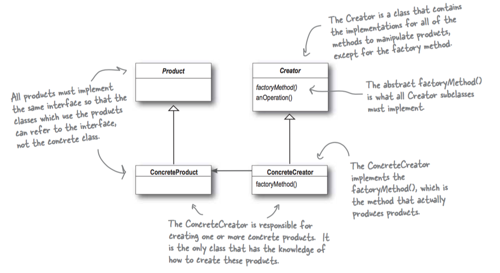
1.5.3 Abstract Factory Pattern
1.6 Singleton
- The Singleton pattern ensures a class has only one instance, and provides a global point of acceding it.
- No public constructor.
class Singleton { private static Singleton uniqueInstance; // Make the constructor private such that it cannot be called from outside. private Singleton(){} public static Singleton getInstance() { if(uniqueInstance == null){ uniqueInstance = new Singleton(); } return uniqueInstance; } } public class DemoSingleton { public static void main(String[] args){ Singleton singleton = Singleton.getInstance(); } }
1.7 Command
- The Command Pattern encapsulates a request as an object, thereby letting you parameterize other objects with different requests, queue or log requests, and support undoable operations.
- It packages the actions and the receiver into an object that exposes just one method,
execute(). - The command object defines a binding between an action and its receiver.
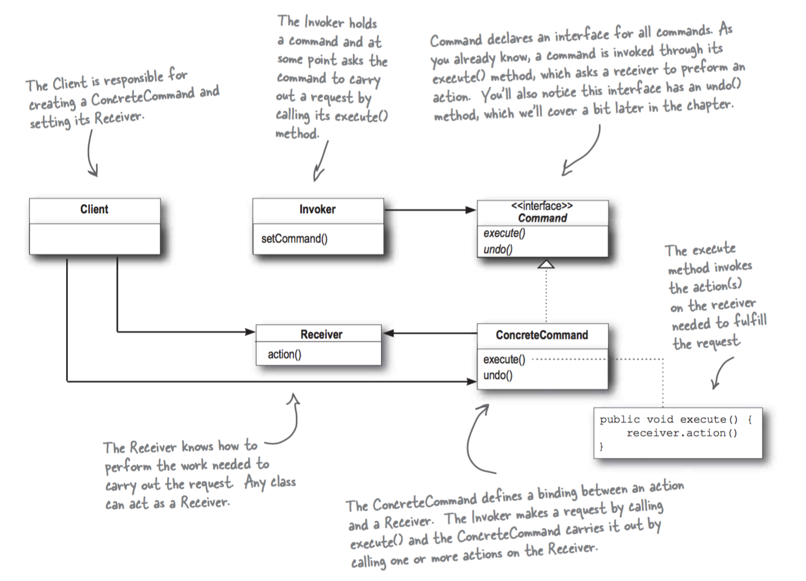
1.8 Adapter
Adapter Pattern converts the interface of a class into another interface the clients expect. 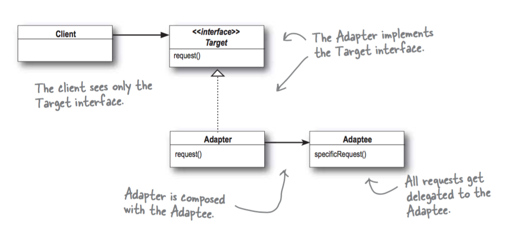
1.9 Facade
- Facade Pattern provides a unified interface to a set of interfaces in a system.
- Facade defines a higher level interface that makes the subsystem easier to use.
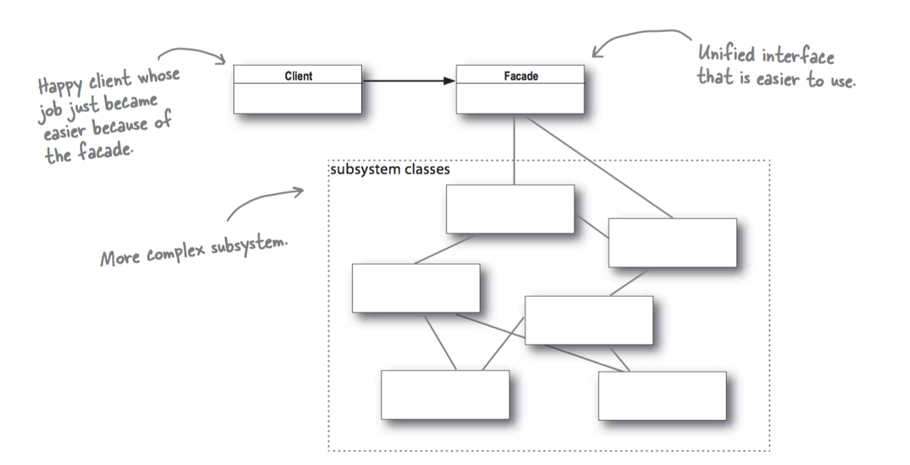
1.10 Template Method
- Template Method Pattern defines the skeleton of an algorithm in a method, deferring some steps to subclasses
- Template Method lets subclasses redefine certain steps of an algorithm, but prohibits changing the algorithm's structure.
final methodcould be used in Java to prevent method overwriting.
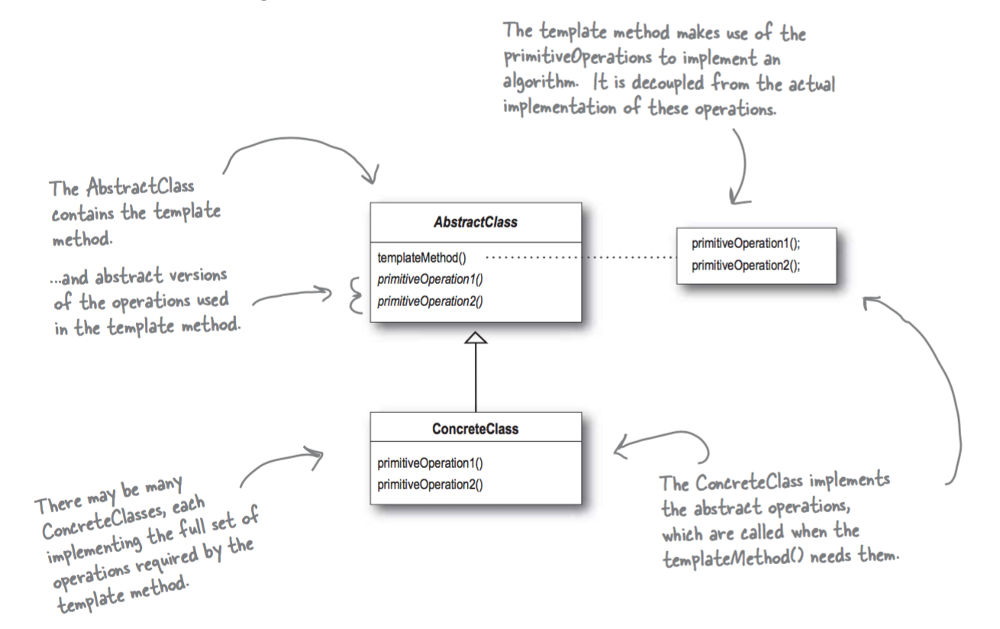
1.11 Iterator
The Iterator Pattern provides a way to access the elements of an aggregate object sequentially without exposing its underlying representation. 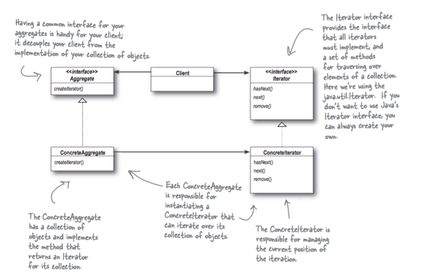
1.12 Composite
- The Composite Pattern allows you to compose objects into tree structures to represent part-whole hierarchies.
- Composite lets clients treat individual objects and compositions of objects uniformly.
- A composite contains components
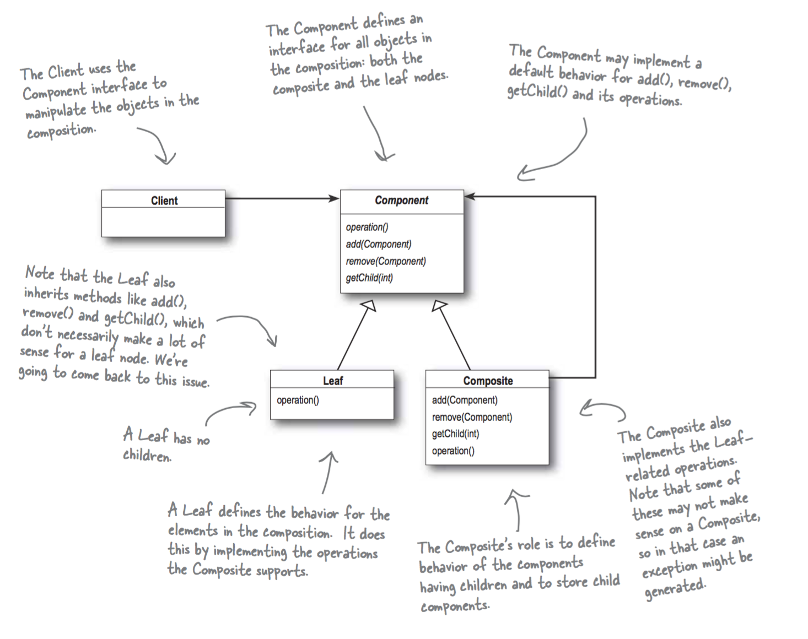
1.13 State
- The State Pattern allows an object to alter its behavior when its internal state changes.
- The object will appear to change its class.
- State Pattern is similar to Strategy Pattern but with different intent.
- With State Pattern, we have a set of behaviors encapsulated in state objects; at any time the context is delegating to one of those states.
- With Strategy Pattern, the client usually specifies the strategy object that the context is composed with.
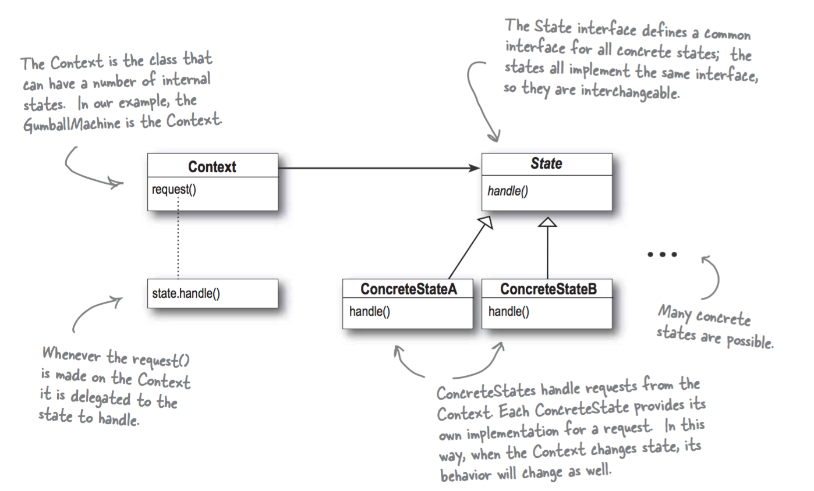
1.14 Strategy
- The Strategy Pattern defines a family of algorithms, encapsulates each one, and makes them interchangeable.
- Strategy enables the algorithms vary independently from clients that use it.
interface Strategy { // All algorithms are interchangeable because they implement the same interface int run(int x1, int x2); } class Add implements Strategy { // Each algorithm is encapsulated in a class public int run(int x1, int x2){return x1 + x2;} } class Multiply implements Strategy { public int run(int x1, int x2){return x1 * x2;} } class Client { private Strategy strategy; public Client(Strategy strategy){ this.strategy = strategy; } public int executeStrategy(int x1, int x2){ return strategy.run(x1, x2); } } public class DemoStrategy { public static void main(String[] args){ Client client = new Client(new Add()); int result = client.executeStrategy(3, 4); } }
1.15 Proxy
- Proxy provides a surrogate or placeholder for another object to control access to it.
- A remote proxy controls access to a remote object
- A virtual proxy controls access to a resource that is expensive to create.
- A protection proxy controls access to a resource based on access rights.
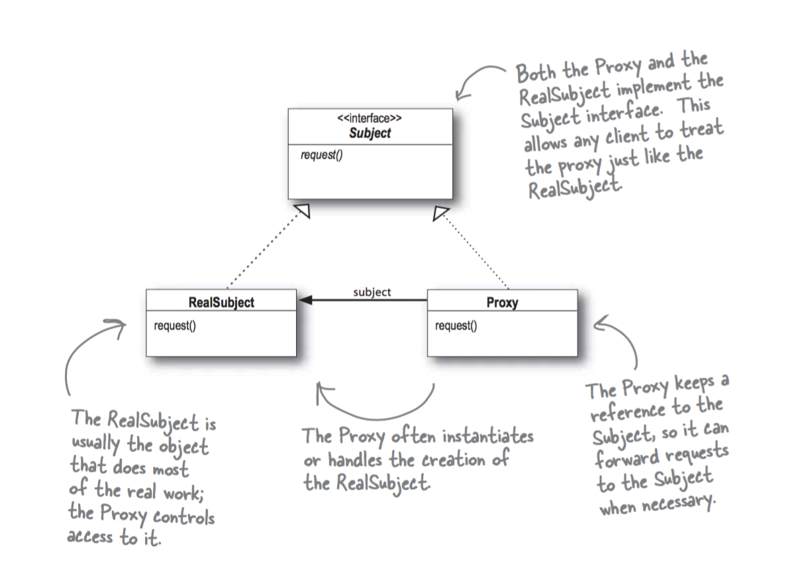
1.16 Flyweight
- Use one instance of class to provide many virtual instances.
- Instead of creating many instances of a class, create one aggregate instance storing array of data.
- Saves memory but all virtual instances have to behave in the same way.
2 Fluid Dynamics
2.1 Mathematical Background
2.1.1 Tensor
- Identity tensor
Also know as substitution tensor or Kronecker delta: \[\delta_{ij} = \begin{cases} 1 & i=j \\ 0 & i\ne j \end{cases}\] It is called substitution tensor because \(\delta_{ij}v_j = v_i\)
- Alternating unit tensor
\[\varepsilon_{ijk} = \begin{cases} 1 & ijk = 123, 231, 312 \\ -1 & ijk = 321, 213, 132 \\ 0 & \mbox{if any two indices are alike} \end{cases}\] \(\varepsilon_{ijk}\) is equivalent to cross product: \[\va\times \vb = \varepsilon_{ijk} a_j b_k\]
- \(\varepsilon_{ijk} \varepsilon_{ilm} = \delta_{jl}\delta_{km} - \delta_{jm}\delta_{kl}\)
- Tensor Decomposition
- Tensor \(Q_{ij}\) is symmetric if \(Q_{ij} = Q_{ji}\)
- Tensor \(R_{ij}\) is anti-symmetric if \(R_{ij} = -R_{ji}\)
- Any tensor can be decomposed into the summation of a symmetric tensor and an anti-symmetric tensor
\[ T_{ij} = T_{[ij]} + T_{(ij)},\quad T_{(ij)} = {T_{ij} + T_{ji}\over 2}, \quad T_{[ij]} = {T_{ij} - T_{ji}\over 2} \]
- Inner Product
Inner product of two tensor is a scalar \[T:S = T_{ij} S_{ji}\]
- Dual Vector
The dual vector \(d_i\) of a tensor \(T_{jk}\) is defined as \[ d_i = \varepsilon_{ijk} T_{jk} \]
- Dyadic Product
The dyadic product or tensor product of two vector \(u_i, v_i\) is defined as \[T_{ij} = u_i v_j\]
- Derivative
\[d\phi = \partial_i \phi d x_i = \nabla \phi \cdot d\vx\] Using directional cosine \(d\vx = \valpha ds\), we can define the directional derivative \[\dd{\phi}{s} = \nabla \phi \cdot \valpha \]
2.1.2 Gauss (Divergence) Theorem
- Index notation: \[ \int_{\Omega} \partial_i F \dV = \int_{\partial\Omega} n_i F \dS \]
- \(\Omega\) is an arbitrary control volume with fixed geometry (not time dependent)
- \(\partial \Omega\) denotes the boundary of \(\Omega\)
- \(\vn\) is the outward normal of \(\Omega\)
- If \(\Omega\) is in 1D: \[ \int_a^b \dd{f}{x} \dx = f(b) - f(a) \]
- For scalar \(f\): \[ \int_{\Omega} \nabla f \dV = \int_{\partial\Omega} \vn f \dS \]
- For vector \(\vu\): \[ \int_{\Omega} \nabla \cdot \vu \dV = \int_{\partial\Omega} \vn \cdot \vu \dS \]
2.1.3 Stokes's Theorem
\[ \int \vn \cdot \nabla \times \vu \dS = \int \vt\cdot \vu \ds \]
2.1.4 Leibnitz's Theorem
\(F(\vx, t)\) is a scalar, vector or tensor function, and the region of integration \(\Omega(t)\) may be moving with velocity \(\vw\). Leibnitz's Theorem says that we may move the time derivative inside the volume integral if we add a surface integral to compensate for the motion of the boundary. \[ \dd{}{t} \int_{\Omega(t)} F(x_i, t) \dV = \int_{\Omega} \pp{F}{t} \dV + \int_{\partial\Omega} n_k w_k F \dS \]
2.2 Motion Equations
2.2.1 Convective derivative
- Also known as:
- total derivative
- advective derivative
- Lagrangian derivative
- substantive or material derivative
- Stokes derivative
- Definition
Convective derivative is the time rate of change for a material element subjected to a space-and-time dependent macroscopic velocity field. \[\dd{f}{t} = \pp{f}{t} + \vu\cdot \nabla f \] The key thing to note is that \(\vx(t)\) is also time dependent, and thus \[\dd{f(\vx(t),t)}{t} = \pp{f}{t} + \pp{f}{\vx}\pp{\vx}{t} = \pp{f}{t} + \vu\cdot \nabla f \]
- For vector variable
If \(\vf\) is a vector variable depending on \(\vx\) and \(t\), then \[ \dd{\vf}{t} = \pp{\vf}{t} + \vu \cdot \nabla \vf \] or using index notation \[d_t f_i = \partial_t f_i + u_j \partial_j f_i \]
2.2.2 Continuity Condition
Continuity requires that anything goes into \(\Omega\) must the mass it contains. \[ \int_{\partial \Omega} \rho \vu (-\vn) \dS = \dd{}{t} \int_{\Omega} \rho \dV \] using Divergence Theorem we get \[ \nabla \cdot (\rho \vu) + \dd{\rho}{t} = 0 \] For incompressible flow (\(\rho=\) constant), it reduces to \[\nabla \cdot \vu = 0\]
2.2.3 Momentum equation
Momentum equation can be derived from Newton's second law of motion: (rate of change of momentum of a control volume \(\Omega\)) = (net force on \(\Omega\)). \[ \dd{}{t} \int_{\Omega}\rho\vu \dV = \int_{\partial\Omega} \sigma \cdot \vn \dS + \int_{\Omega} \vf \dV \] where \(\sigma\) is the stress tensor, \(\vf\) is the body force.
In differential form \[ \dd{\rho\vu}{t} = \nabla\cdot\sigma + \vf \]
2.3 Navier-Stokes Equation
2.3.1 Constitutive relationship of newtonian fluids
The stress tensor can be decomposed into isotropic part and viscous part: \[\sigma_{ij} = - p\delta_{ij} + \tau_{ij} \] In Newtonian incompressible flow, we assume \[\tau_{ij} = \mu (\partial_i u_j + \partial_j u_i) \] Substituting into the momentum equation leads to \[ \rho\pp{\vu}{t} + \rho \vu\cdot \nabla \vu = -\nabla p + \mu \nabla^2 \vu + \vf \] If we drop the inertial term \(\rho\vu\cdot\nabla\vu\), then we obtain the Stokes Equation, which is the linearization of NS equation at low Reynolds number (\(Re = \rho U L /\mu\)).
2.4 Finite Element Methods
2.4.1 Discretization
- Test function: defined locally.
- Shape function: used to represent the candidate solution.
In Galerkin FEM, the shape functions are of the same sort as the test functions.
3 Numerical Optimization
3.1 Linear Algebra
- Positive definite
- A square matrix \(A\) is positive definite if \(x^T A x > 0\) for all nonzero \(x\in \R^n\). All eigenvalues of a symmetric positive definite matrix are positive.
- Positive semi-definite
- A square matrix \(A\) is positive definite if \(x^T A x \ge 0\) for all \(x\in \R^n\).
- Singularity
- Let \(A\) be a square matrix, then the followings are equivalent:
- \(A\) is nonsingular
- For any \(b\in \R^n\), there exists \(x\in\R^n\) such that \(Ax=b\)
- Determinant \(|A| \ne 0\)
- \(A\) has an inverse.
- Orthogonal
- A square matrix \(Q\) is orthogonal if \(Q^T Q = Q Q^T=I\). We also have \(Q^{-1} = Q^T\)
- Vector Norm
- \[||x||_p = \left(\sum_i |x_i|^p \right)^{1\over p} \]
- Matrix Norm
- Matrix norm is derived from vector norm: \[ ||A|| = \sup_{x\ne 0} {||Ax||\over ||x||} \]
- 1-norm is the maximum absolute column sum \[ ||A||_1 = \max_j \sum_i |A_{ij}| \]
- 2-norm is the largest eigenvalue of \(\sqrt{A^T A}\)
- \(\infty\) -norm is the maximum absolute row sum \[ ||A||_{\infty} = \max_i \sum_j |A_{ij}| \]
- Frobenius norm (not consistent with vector norm) \[||A||_F = \sqrt{\sum_{i,j} A^2_{ij}} \]
- Condition number
- Condition Number of a nonsingular matrix is defined as \[\kappa(A) = ||A|| \cdot ||A^{-1}||\]
- Eigenvalue
- For a square matrix \(A\in \R^{n\times n}\), if there is a nonzero vector \(q\) such that \[Aq = \lambda q\] then \(\lambda\) is an eigenvalue and \(q\) is an eigenvector.
- Rank
- Rank of a matrix is the dimension of the vector space generated by its columns or rows. Any rank-1 matrix can be written as \(\vu \vv^T\), where \(\vu, \vv \in \R^{n\times1}\)
3.1.1 Matrix Decomposition
- Singular Value Decomposition (SVD)
- If \(A\in \R^{n\times n}\) is symmetric, its spectral decomposition is given by \[ A = Q\Lambda Q^T\] where \(\Lambda = \mathrm{diag}(\lambda_1, \lambda_2, \dots, \lambda_n)\), and eigenvector matrix \(Q=[q_1, q_2, \dots q_n]\)
3.2 Overview
- Three components of an optimization problem
- Objective: a quantitative measure of the performance of the system under study.
- Variables: the objective depends on certain characteristics of the system.
- Constraint: often the variables are constrained.
- Math formulation
\[ \min_{\vx\in R^n} f(\vx) \quad s.t. \begin{cases} c_i(\vx) = 0 & i \in \E \quad (\mbox{Equality constraints}) \\ c_i(\vx) \ge 0 & i \in \I \quad (\mbox{Inequality constraints}) \end{cases} \]
- Minimizers
- Global: \(f(x^*) \le f(x) \forall x\)
- Local: \(\exists\) a neighborhood \(\N\), such that \(f(x^*) \le f(x) \forall x \in \N\)
- Strict local: \(\exists\) a neighborhood \(\N\), such that \(f(x^*) < f(x) \forall x \in \N\) and \(x\ne x^*\)
- Isolated: \(\exists\) a neighborhood \(\N\), such that \(x^*\) is the only local minimizer.
- Hessian
- Hessian is a square matrix of second order partial derivatives. \(\nabla^2 f = H_{ij} = \partial_i\partial_j f\)
- Jacobian
- Jacobian is the matrix of all first-order partial derivatives of a vector valued function. Suppose \(\vf: \R^n\to \R^m\), then \(J \in \R^{m\times n}\) matrix:
\[ J = \dd{\vf}{\vx} \mbox{ or } J_{ij} = \pp{f_i}{x_j}\]
3.2.1 Convexity
- Convex set
- For any two point \(x, y \in S\), if \(\alpha x + (1-\alpha) y \in S\) for all \(\alpha\in [0,1]\), then \(S\) is a convex set.
- Convex function
- A function \(f\) is convex if its domain \(S\) is convex and for any two points \(x, y\in S\) and \(\alpha \in [0,1]\), we have
\[ f(\alpha x + (1-\alpha) y) \le \alpha f(x) + (1-\alpha) f(y) \]
- Global minimizer
- If the objective and feasible region are both convex, then any local minimizer is in fact a global minimizer.
- Convex optimization
- Three requirements:
- The objective is convex
- The equality constraint are linear (otherwise it wouldn't be convex region)
- The inequality constraints are concave (because we let \(c_i(x)\ge 0\)).
3.2.2 Taylor's Theorem
- Let \(k\ge 1\) be an integer, function \(f: \R\to \R\) be k-times differentiable at point \(a\in \R\), then there exists a function \(h_k: \R\to \R\) such that
\[f(x) = \sum_{i=0}^k {f^{(i)}(a) \over i!} (x-a)^i + h_k(x)(x-a)^k \mbox{ and }\lim_{x\to a} h_k(x) = 0\]
- Remainder \(R_k(x) = h_k(x)(x-a)^k\) goes to zero faster than \((x-a)^k\).
- Vector form: Suppose that \(f: \R^n \to \R\) is continuously differentiable and that \(p\in \R^n\), then we have some \(t\in (0,1)\) such that \[f(x+p) = f(x) + p^T \nabla f(x+ tp)\] and \[f(x+p) = f(x) + p^T \nabla f(x) + {1\over2} p^T \nabla^2 f(x+ tp) p\]
- Integral form: \[\nabla f(x+p) = \nabla f(x) + \int_0^1 \nabla^2 f(x+tp) \cdot p dt \]
3.3 Unconstrained Optimization
3.3.1 Unconstrained Optimality Condition
- 1st order Necessary
- \(x^*\) is a local minimizer \(\Rightarrow \nabla f(x^*) = 0\)
- 2nd order Necessary
- \(x^*\) is a local minimizer \(\Rightarrow \nabla f(x^*) = 0\) and \(\nabla^2 f(x^*)\succeq 0\) (positive semi-definite)
- 2nd order Sufficient
- \(x^*\) is a strict local minimizer \(\Leftarrow \nabla f(x^*) = 0\) and \(\nabla^2 f(x^*)\succ 0\) (positive definite)
3.3.2 Line Search
- In the line search strategy, the algorithm chooses choose a direction \(p_k\) and searches along this direction for a lower objective.
- Subproblem: \(\min_{\alpha>0} f(x_k + \alpha p_k)\)
3.3.3 Line Search Directions
- Steepest descent direction
- \(p_k = -\nabla f_k\)
- Newton direction
- \(p_k^N = -(\nabla^2 f_k)^{-1} \nabla f_k\).
- Newton direction is derived from 2nd order Taylor approximation of \(f(x_k+ p)\).
- Newton direction can be used if \(\nabla^2 f_k\) is positive definite.
- Quasi-Newton direction
- Does not require computation of Hessian.
- From the integral form of Taylor's Theorem, we have \(\nabla f(x+p) - \nabla f(x) \approx \nabla^2 f(x)\cdot p\)
- Hessian approximation should mimic the property and satisfies the secant equation:
\[B_{k+1} s_k = y_k \quad s_k = x_{k+1} - x_k \quad y_k = \nabla f_{k+1} - \nabla f_k\]
- Two popular approximations: SR1 (Symmetric Rank one) and BFGS
- Conjugate gradient direction
- \(p_k = -\nabla f_k + \beta_k p_{k-1}\), where \(\beta_k\) is a scalar that ensures that \(p_k\) and \(p_{k-1}\) are conjugate.
3.3.4 Trust Region
- In the trust region strategy, the information gathered about \(f(x)\) is used to construct a model function \(m_k(x)\) whose behavior near the current point \(x_k\) is similar to that of \(f(x)\).
- Subproblem: \(\min_p m_k(x_k + p)\), where \(x_k + p\) lies inside the trust region.
3.4 Least Square Problems
3.4.1 Problem Formulation
In least-square problems, the objective \(f\) takes the form: \[ f(x) = {1\over2} \vr\cdot \vr = {1\over2} \sum_{j=1}^m r_j^2(x) \] where each \(r_j : \R^n \to \R\) is a smooth residual function, and \(m \ge n\).
3.4.2 Solving
- Gradient: \[ \nabla f = J^T \cdot \vr, \mbox{where } J = \pp{\vr}{\vx} \]
- Hessian \(H=\nabla^2 f\): The first item is available cheaply \(J^T J\)
\[H_{ij} = (\partial_i r_k)(\partial_j r_k) + r_k \partial_i \partial_j r_k\]
3.4.3 Linear Least Square
If \(f(x) = {1\over2} |Ax-b|^2\), then \(J = A\) and setting \(\nabla f = A^T (Ax-b) = 0\) gives the normal equation \[ A^T A x = A^T b \]
3.5 Constrained Optimization
- Active set \(\A(x)\)
- The active set \(\A(x)\) at any feasible \(x\) consists of the equality constraints indices from \(\E\) and indices of tight inequality constraints.
\[ \A(x) = \E \cup \{i\in \I | c_i(x) =0 \} \]
- Tangent cone \(T_{\Omega}(x^*)\)
- The set of all tangents (limiting direction of a feasible sequence) to \(\Omega\) at \(x^*\).
- The set of linearized feasible directions \(\F(x)\)
- Given a feasible point \(x\) and active set \(\A(x)\), the set of linearized feasible directions \(\F(x)\) is \[ \F(x) = \{d | d^T \nabla c_i(x) = 0 \forall i \in \E \mbox{ and } d^T \nabla c_i(x) \ge 0 \forall i \in \A(x)\cap \I \} \]
- Constraint qualifications
- Constraint qualifications are assumptions that ensure similarity of the constraint set \(\Omega\) and its linearized assumption, in a neighborhood of \(x^*\).
- LICQ (Linear Independence Constrains Qualification)
- Given a feasible \(x\) and active set \(\A(x)\), LICQ holds if the set of active constraint gradients \(\{\nabla c_i, i\in \A(x)\}\) is linearly independent. If LICQ holds, none of the active constraint gradients can be zero.
- Lagrangian multiplier vectors
- \[L(x, \lambda) = f(x) - \sum_{i\in E\cup I}\lambda_i c_i(x) \]
- \(\lambda_i^*\) indicates how hard \(f\) is pushing or pulling the solution \(x^*\) against the particular constraint \(c_i\).
- \(\lambda_i^* = 0\) for inactive constraints and it indicates that \(c_i\) is not significant.
3.5.1 KKT (1st order Necessary) condition
Suppose \(x^*\) is a local solution and LICQ holds for \(x^*\), then there is a Lagrangian multiplier vector \(\lambda^*\) such that
- Stationarity: \[\nabla_x L(x^*, \lambda^*) = \nabla f - \sum_{i\in A(x^*)} \lambda^*_i \nabla c_i = 0\]
- Primal feasibility: \(c_i(x^*) = 0\), for all \(i\in \E\) and \(c_i(x^*) \ge 0\), for all \(i\in \I\)
- Dual feasibility: \(\lambda^*_i \ge 0\), for all \(i \in \I\)
- Complementarity condition: \(\lambda^*_i \cdot c_i(x^*) = 0\), for all \(i\in I\). either constraint \(c_i\) is active or \(\lambda^*_i = 0\)
3.5.2 Notes about KKT
- We used \(\ge\) symbol for inequality constraints such that \(\nabla c_i(x)\) always points toward the feasible region for \(i \in \I\)
3.5.3 Proof of KKT
- Let \(x^*\) be a feasible point, then \(T_{\Omega}(x^*) \subset \F(x^*)\). If the LICQ is satisfied at \(x^*\), then \(T_{\Omega}(x^*) = \F(x^*)\)
- A cone in \(\R^n\) can be represented by all its arbitrary vectors: \(\vk = \vB\vy + \vC\vw\), where \(\vB = [\vb_1, \vb_2, \dots, \vb_m] \in \R^{n\times m}\), \(\vy \ge 0\) and \(\vC\in \R^{n\times p}\).
- If a cone lies on one side of a directional hyper plane (represented by its normal vector \(\vd\)), then \(\vk^T \vd \ge 0\) for all \(\vy >0\) and \(\vw\), i.e., \(B^T d\ge 0\) and \(C^T d=0\).
- Farkas Lemma: Given a vector \(g \in \R^n\) and a cone \(K = \{By + Cw | y\ge 0\}\), then exactly one of the following is true:
- The vector is in the cone: \(g \in K\)
- There is a plane with normal \(d\) that separates \(g\) from \(K\), i.e., \(g^T d<0\), \(B^T d\ge 0\) and \(C^T d=0\)
- Now we can prove KKT
- If \(x^*\) is a local solution, then \(\nabla f(x^*) ^T d \ge 0\) for all \(d\in T_{\Omega}(x^*)\), otherwise we have a feasible descent direction.
- If the LICQ is satisfied, then \(\nabla f(x^*) ^T d \ge 0\) for all \(d\in \F(x^*)\)
- Let the cone be \[K = \left\{ \sum_{i\in\A(x^*)} \lambda_i \nabla c_i(x^*) \bigg| \lambda_i \ge 0 \forall i \in \A(x^*)\cap \I \right\}\], and the vector \(g = \nabla f(x^*)\), using Farkas Lemma then either \(g\in K\) or there exists plane normal \(d\) separating \(\nabla F(x^*)\) and \(K\).
- In the case of \(d\in K\), we can construct required Lagrangian multipliers; In the latter case, \(d\) is a feasible descent direction since \(d\in \F(x^*)\).
3.6 Duality
- Infimum and Supermum
- Infimum: greatest lower bound; Supremum: least upper bound.
- If \(A\subseteq B\), then \(\sup A \le \sup B\) and \(\inf A \ge \inf B\)
- \(\inf(-A) = - \sup A\), \(\sup(-A) = - \inf A\)
- \(\inf (A + B) \ge \inf A + \inf B\)
- Original problem
- \[\min_{x\in \R^n} f(x) \mbox{ s.t. } c_i(x) = 0 \forall i \in \E, c_i(x) \ge 0 \forall i \in \I \]
- Lagrangian function
- \[L(x,y) = f(x) - \sum_{i\in \E\cup\I}y_i c_i(x) \]
- Primal Function
- \[L_P(x) = \sup_{y \in \Y} L(x,y)\] where \(\Y = \{y: y_i \ge 0 \forall i \in \I \}\)
- Dual Function
- \[L_D(y) = \inf_{x} L(x,y) \]
- Primal Problem
- \[ L_P(x) = \sup_{y\in\Y} \left\{\ f(x) - \sum_{i\in \E\cup\I} y_i c_i(x) \right\} = f(x) - \inf_{y\in\Y} \left\{ \sum_{i\in \E\cup\I} y_i c_i(x) \right\} \]
- If \(x\) is feasible, then the \(\inf\) is zero. If \(x\) is infeasible, then at least one constraint is violated and we can choose \(y_i\) to make the \(\inf = -\infty\). \[L_P(x) = \begin{cases} f(x) & \mbox{if $x$ is feasible} \\ f(x) - (-\infty) = \infty & \mbox{if $x$ is not feasible} \end{cases}\]
- The original problem is the primal problem: \[ \min_{x} L_P(x) \iff \min_{x\in \R^n} f(x) \mbox{ s.t. } c_i(x) = 0 \forall i \in \E, c_i(x) \ge 0 \forall i \in \I\]
- Dual Problem
- \(\max_{y\in \Y} \inf_x L(x,y)\)
- Due to linearity of \(y\) and \(\inf(A+B) \ge \inf A + \inf B\), the dual function is always concave.
- Weak Duality
- For any \(x^*\) and feasible \(y^*\in \Y\), we have
\[L_P(x^*) = \sup_{y\in \Y} L(x^*, y) \ge L(x^*, y^*) \ge \inf_{x^*} L(x, y^*) = L_D(y^*) \]
- Duality Gap
- If \(x^*\) is a primal feasible point and \(y^*\) is a dual feasible point, then \(f(x^*) \ge L_D(y^*)\), and we define \[\mathrm{gap}(x^*, y^*) = f(x^*) - L_D(y^*)\]
- Saddle Point
- A point \((x^*, y^*)\), where \(y^*\in \Y\) is a saddle point of the Lagrangian if for all \(x\in \R^n\) and \(y \in \Y\) we have \[ L(x^*, y) \le L(x^*, y^*) \le L(x, y^*) \]
- Strong Duality
- If the Lagrangian has a saddle \((x^*, y^*)\), then \(x^*\) is a solution to the primal problem, \(y^*\) is a solution to the dual problem and \(\mathrm{gap}(x^*, y^*) = 0\).
- Duality and Convex Optimization
- If the original problem is a convex optimization, it follows that \((x^*, y^*) \in \R^n\times \Y\) is a KKT point if and only if it is a saddle point to the Lagrangian.
3.7 Linear Programming
- Standard form
- Linear objective and linear constraints. \(c, x \in \R^n, b\in \R^m\), and \(A\in \R^{m\times n}\) with full row rank (usually \(m
- Lagrangian
- \[ L(x, \lambda, s) = c^T x - \lambda^T(Ax-b) - s^T x = (c - A^T\lambda - s)^T x + \lambda^T b \]
- KKT condition
- \(A^T \lambda +s = c\)
- \(Ax = b\)
- \(x\ge 0\)
- \(s \ge 0\)
- \(x^T s = 0\)
- Dual problem
- \[\max b^T \lambda, \mbox{ subject to } A^T \lambda \le c \]
- Dual problem with slack variables
- \[\max b^T \lambda, \mbox{ subject to } A^T \lambda + s = c, s\ge 0 \]
3.7.1 Simplex Method
- Basic feasible point
- \(x\) is a basic feasible point if there exists a subset \(\B\) of the index set \(\{1,2,\dots, n\}\) such that
- \(\B\) contains exactly \(m\) indices
- \(i \not\in \B \Rightarrow x_i = 0\)
- Matrix \(B\) composed of columns of \(A\) is nonsingular: \(B = [A_i]_{i\in\B}\)
- Vertex
- All basic feasible points of the standard LP are vertices of the feasible polytope \(\{x | Ax=b, x\ge 0\}\), and vice versa.
- Idea
- Simplex method starts from a vertex, and moves from one vertex to an adjacent one for which \(\B\) differs in exactly one component.
3.7.2 Primal-Dual Interior-Point Method
- Interior point
- The method requires all iterates to satisfy the inequality constraints in the problem strictly, so it is called interior-point method.
3.8 Method of Moving Asymptotes (MMA)
- In each iteration of MMA, a strictly convex approximating subproblem is generated and solved.
- Generation of these subproblems is controlled by "moving asymptotes"
3.8.1 Problem to solve
\(\vx\in \R^n\) is the design variable, \(f_0(\vx)\) is the objective function.
- Minimize \(f_0(\vx)\)
- Inequality constraints \(f_i(\vx) \le \hat{f_i}\), for \(i = 1,\dots, m\)
- Bound constraints \(\underline{x}_j \le x_j \le \overline{x}_j\), for \(j = 1,\dots,n\)
3.8.2 General approach
- Choose a starting point \(\vx^{(0)}\), and set iteration index \(k=0\)
- Given an iterate \(\vx^{(k)}\), calculate value and gradient of objective and constraints: \(f_i(\vx^{(k)})\) and \(\nabla f_i(\vx^{(k)})\) for \(i=0,1,\dots,m\)
- Generate a subproblem \(P^{(k)}\) using linearized \(f_i\), based on the calculated \(f_i\) and \(\nabla f_i\).
- Solve \(P^{(k)}\) and use the solution for next iteration.
3.8.3 Approximation of \(f_i\)
\(\tilde{f_i}(\vx)\) is a first order convex approximation of \(f_i\), i.e., it has the same value and derivative as \(f_i\) at \(\vxk\) \[ \Ljk < \xjk < \Ujk \] \[ \tilde{f_i}(\vx) = \rik + \sum_{j=1}^n \left( {p_{ij}^{(k)} \over \Ujk - x_j} + {q_{ij}^{(k)} \over x_j - \Ljk } \right) \] where \[ p_{ij}^{(k)} = \max\left\{0, \pow{ \Ujk - \xjk }{2} \pp{f_i}{x_j} \right\} \] \[ q_{ij}^{(k)} = \max\left\{0, - \pow{ \xjk - \Ljk }{2} \pp{f_i}{x_j} \right\} \] and \(\rik\) is meant to make \(\tilde{f_i}(\vxk) = f_i(\vxk)\)
In summary \[ \tilde{f_i}(\vx) = r_i^{(k)} + \sum_{j=1}^n \begin{cases} { \pow{\Ujk - \xjk}{2} \over \Ujk - x_j} \pp{f_i}{x_j} & \pp{f_i}{x_j} > 0 \\ 0 & \pp{f_i}{x_j} = 0 \\ -{ \pow{\xjk - \Ljk}{2} \over x_j - \Ljk } \pp{f_i}{x_j} & \pp{f_i}{x_j} < 0 \end{cases} \] The asymptotes \(L, U\) controls second order derivative of \(\tilde{f_i}\). The closer they are chosen to \(\vx\), the larger become the second derivatives.
3.8.4 Solving subproblem
4 Probability and Statistics
4.1 Probability
- Sample space \(\Omega\)
- Sample space is the set of all possible outcomes in an experiment.
- Event
- Event is a particular subset of sample space \(\Omega\).
- Probability measure
- a probability measure on \(\Omega\) is a function \(p\) from subsets of \(\Omega\) to the real numbers that satisfies the following axioms:
- \(p(\Omega) = 1\)
- If \(A\subset \Omega\), then \(p(A) \ge 0\)
- If \(A_1 \cap A_2 = \emptyset\) (disjoint), then \(p(A_1\cup A_2) = p(A_1) + p(A_2)\)
- Conditional probability
- Let \(A, B\) be two events with \(p(B)\ne 0\). If we are given that event \(B\) occurred, then the relevant sample space is \(B\) rather than \(\Omega\). The conditional probability of \(A\) given \(B\) is
\[p(A|B) = {p(A\cap B) \over p(B)}\]
- Law of total probability
- Let \(B_i\) be mutually disjoint nonempty events and \(\cup_i B_i = \Omega\), then for any event \(A\): \[p(A) = \sum_i p(A|B_i) p(B_i)\]
- Bayes' rule
- \[p(A|B) = {p(B|A) p(A) \over p(B)}\]
- Independence
- \(A, B\) are independent if knowing that one had occurred gave us no information about whether the other had occurred. \[ p(A\cap B) = p(A)p(B) \]
4.2 Random Variables
- Random variable
- A random variable is a function from \(\Omega\) to the real numbers.
- Discrete
- A discrete random variable can take on only a finite or at most a countably infinite number of values.
- Discrete Variables
- Frequency function: \(p(x_i) = P(X = x_i)\)
- Cumulative distribution function (CDF): CDF is a non-decreasing function with \(\lim_{x\to-\infty} F(x)=0\) and \(\lim_{x\to\infty} F(x)=1\). \(F(x) = p(X\le x), -\infty \le x \le \infty\)
- Continuous variables
- Density function \(f(x)\) has the properties:
- \(f(x) \ge 0\)
- \(f(x)\) is pairwise continuous
- \(\int_{-\infty}^{\infty} f(x)d x = 1\)
- Cumulative distribution function: \[F(x) = p(X\le x) = \int_{-\infty}^x f(u) du \]
- Quantile: The p-th quantile of the distribution with CDF \(F(x)\) is defined to be the inverse of \(F\): \[ x_p = F^{-1}(p)\]
- Density function \(f(x)\) has the properties:
4.2.1 Discrete Distributions
- Bernoulli distribution (binary)
A Bernoulli variable takes value on only 0 or 1, with probability \(1-p\) and \(p\). In application, it often occurs as indicator variable. \[ p(1) = p; p(0) = 1-p \]
- Binomial distribution (number of successes)
A Binomial variable \(X\) is the total number of successes in \(n\) independent Bernoulli (such as coin tossing) experiments. \[ p(k) = p(X=k) = {n\choose k} p^k (1-p)^{n-k} \]
- Geometric distribution (number of trials till the first success)
The geometric distribution is also constructed from independent Bernoulli trials, but from an infinite sequence. Define \(X\) as the total number of trials up to and including the first success. \[p(k) = p(X=k) = (1-p)^{k-1} p\]
- Negative binomial distribution (number of trials till the first \(r\) success)
Negative binomial distribution is a generalization of geometric distribution. Define \(X\) as the total number of trials performed until there are \(r\) success (the last one is a success): \[p(k) = p(X=k) = {k-1 \choose r-1} p^r (1-p)^{k-r} \]
- Hyper-geometric distribution
Suppose that an urn contains \(n\) balls, of which \(r\) are black and \(n-r\) are white. \(X\) denotes the number of black balls drawn when taking \(m\) balls without replacement. \[p(k) = p(X=k) = {{r\choose k} {n-r\choose m-k} \over {n\choose m} }\]
- Poisson distribution (large \(n\) small \(p\))
Poisson frequency function with parameter \(\lambda>0\) is given by \[ p(x) = {\lambda^k \over k! } e^{-\lambda} \] Poisson distribution approximates Binomial distribution with large \(n\), small \(p\) and \(np=\lambda\). Poisson distribution can be used to model the total number of occurrence of some event in a given interval of time, such as the number of calls coming into an exchange during a unit of time (if the exchange serves a lot of customers who act independently).
4.2.2 Continuous Distributions
- Uniform distribution
A uniform random variable on the interval of \([a,b]\) \[f(x) = \begin{cases} {1\over b-a} & a \le x \le b \\ 0 & x < a \mbox{ or } x > b \end{cases}\]
- Exponential distribution
\[ f(x) = \begin{cases}\lambda e^{-\lambda x} & x \ge 0 \\ 0 & x < 0 \end{cases} \quad F(x) = \begin{cases} 1- e^{-\lambda x} & x \ge 0 \\ 0 & x < 0 \end{cases} \] Exponential distribution is usually used to model lifetimes or waiting times (probability of dying is the same at any age). Suppose an electronic component has lasted time \(s\), and we wish to calculate the probability that it will last at least \(t\) more time: \[p(T>t+s | T>s) = {p(T> t+s)\over p(T>s)} = e^{-\lambda t} \] Exponential distribution is thus said to be memoryless since the probability does not depend on \(s\). On the other hand, memorylessness also implies that the distribution is exponential.
- Gamma distribution
- Normal (Gaussian) distribution
\[ \phi(x) = {1\over \sigma \sqrt{2\pi}} e^{-(x-\mu)^2 / 2\sigma^2}, -\infty < x < \infty \] If \(X\sim N(\mu, \sigma^2)\), and \(Y=aX+b\), then \(Y\sim N(a\mu+b, a^2 \sigma^2)\)
- Beta distribution
4.3 Joint Distributions
- Discrete random variables
- Joint frequency function: \(X, Y\) are discrete random variables defined on the same sample space, then the joint frequency function is \[p(x,y) = p(X=x, Y=y)\]
- Marginal frequency function of \(X\): \[p_X (x) = \sum_i p(x, y_i) \]
4.4 Expected Value
4.4.1 Expectation
- Discrete
- If \(X\) is a discrete random variable with frequency function \(f(x)\), the expected value of \(X\) is
\[ E(X) = \sum_i x_i p(x_i) \] provided that \(\sum_i |x_i|p(x_i) < \infty\)
- Continuous
- If \(X\) is a continuous random variable with density \(f(x)\), then \[E(X) = \int_{-\infty}^{\infty} xf(x) dx\] provided that \(\int |x| f(x)dx <\infty\).
- Markov's Inequality
- . If \(X\) is a random variable with \(p(X\ge 0)=1\) and for which \(E(X)\) exists, then \[p(X\ge t) \le {E(X) \over t} \] Meaning: It is unlikely that \(X\) is much bigger than \(E(X)\).
- Linearity of expectation
- If \(X_1, \dots, X_n\) are jointly distributed random variables with expectations \(E(X_i)\), then
\[E \left( a+\sum_i b_i X_i \right) = a + \sum_i b_i E(X_i)\]
4.4.2 Variance and Standard Deviation
- Variance
- \[\Var{X} = E\bigg( [X-E(X)]^2 \bigg)\]
- Variance is a measure of variability (spread around the center).
- In short words, variance is the expected deviation from mean.
- For discrete variable: \[ \Var{X} = \sum_i (x_i - \mu)^2 p(x_i) \]
- For continuous variable: \[ \Var{X} = \int_{-\infty}^{\infty} (x - \mu)^2 f(x) dx \]
- Standard deviation
- Standard deviation is the square root of variance \[\sigma(X) = \sqrt{\Var{X}}\]
- Coefficient or variation
- aka relative standard deviation \(\sigma/\mu\)
- Linear transformation
- If \(\Var{X}\) exists, then \[\Var{a + bX} = b^2\Var{X}\]
- Alternative calculation
- By linearity of expectation, variance can also be calculated as \[\Var{X} = E(X^2) - [E(X)]^2\]
- Chebyshev's Inequality
- Chebyshev's Inequality quantifies the notion that variance of a random variable measures how spread out its possible values are. Let \(X\) be a random variable with mean \(\mu\) and variance \(\sigma^2\), then for any \(t>0\)
\[ p(|X-\mu|>t) \le {\sigma^2 \over t^2} \]
4.4.3 A Mode for Measurement Error
The measurement is modeled as a random variable \(X\) \[ X = x_0 + \beta + \varepsilon\] where \(x_0\) is the true value, \(\beta\) is the bias or systematic error, and \(\varepsilon\) is the random error with \(E(\varepsilon) = 0\) and \(\Var{\varepsilon}=\sigma^2\).
- MSE (Mean Square Error)
- MSE is an overall measure of the size of the measurement error
\[\MSE = E[(X-x_0)^2]\]
- MSE = bias + variance
- MSE can be decomposed into bias and variance
\[\MSE = \beta^2 + \sigma^2 \]
4.4.4 Covariance and Correlation
Covariance is a measure of joint variability or degree of association of two random variables.
- Covariance
- If \(X, Y\) are jointly distributed random variables with expectations \(\mu_X, \mu_Y\), their covariance is
\[\Cov{X,Y} = E[(X-\mu_X) (Y-\mu_Y)]\] Using linearity of expectations we have \[\Cov{X, Y} = E(XY) - E(X)E(Y)\] If \(X, Y\) are independent \(E(XY) = E(X)E(Y)\), then \(\Cov{X,Y}=0\)
- Covariance of linear combinations of variables
- \(\Cov{a+X, Y} = \Cov{X,Y}\)
- \(\Cov{aX, bY} = ab \Cov{X,Y}\)
- \(\Cov{X, Y+Z} = \Cov{X,Y} + \Cov{X,Z}\)
- Correlation coefficient \(\rho\)
- Correlation is defined in terms of covariance and variances. It is dimensionless and normalized; if \(X,Y\) are subjected to linear transformation, the correlation coefficient does not change. \[\rho = {\Cov{X,Y} \over \sqrt{\Var{X} \Var{Y}}} = {\sigma_{XY} \over \sigma_X \sigma_Y}\]
- \(\rho \in [-1,1]\)
- \(\rho=\pm1\) if and only if \(Y = a + bX\) for some constant \(a,b\)
4.5 Data Pre-processing
4.5.1 TODO Skewness
4.5.2 Normality
4.5.3 Cronbach's alpha
Cronbach's alpha is a measure of internal consistency. Suppose \(X=Y_1 + Y_2 +\dots Y_k\), then \[\alpha = {k\over k-1} \left( 1 - {\sum_{i=1}^k \sigma^2_{Y_i} \over \sigma_X^2 } \right) \]
5 Parallel Computing
5.1 OpenMP
5.2 CUDA
5.2.1 Terminologies
- CUDA: a parallel computing platform and API model created by Nvidia.
- Host: CPU
- Device: Graphical Processing Unit
- Kernel: functions run on GPU device
5.2.2 GPU Memory Model
- Global memory: slow and uncached
- Registers: fast; for variables defined in kernels.
- Local memory: for what doesn’t fit in registers, slow but cached
- Shared memory: accessible by threads within the block
- Texture memory: read only; cache optimized for 2D access.
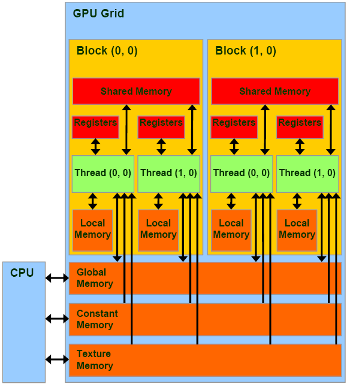
5.2.3 Syntax
__global__ function declaration: the keyword indicates a function that runs on device and is called by from host code.mykernel<<< N_blocks, N_threads_per_block >>>();Triple angle brackets mark a call from host code to device code.- Host pointer cannot be dereferenced in device code; Device pointer cannot be dereferenced in host code.
blockIdx.xandthreadIdx.xgive the indexblockDim.xgive the number of threads per block
5.3 OpenCL
6 Natural Language Processing
6.1 Grammar
6.1.1 Levels of languages:
- Phonetics (语音学)
- the study of speech sounds, their production and combination, and their representation by written symbols
- Morphology (构词学)
- the branch of linguistics that deals with word structure and with functional changes in the forms of words, such as inflection and compounding
- Syntax (句法)
- the arrangement of and relationships among words, phrases, and clauses forming sentences; sentence structure
- Semantics (语义学)
- the branch of linguistics concerned with the nature, the structure, and the development and changes of the meanings of speech forms, or with contextual meaning
- Pragmatics (语用学)
- the branch of linguistics concerned with meaning in context, or the meanings of sentences in terms of the speaker's intentions in using them
6.1.2 Part-of-speech or word classes
- Two super categories
- closed class: a closed class has relatively fixed membership; these words are generally function words;
- prepositions: on, under, over, near
- determiners: this (as in this chapter), articles (a, an, the)
- pronouns: she, who, I, others
- conjunctions: and, but, or, as, if
- auxiliary verbs: can, may, should, are
- particles: function words that must be associated with another word or phrase to impart meaning, such as the infinitive marker "to".
- numerals: one, two, first
- open classes (nouns, verbs, adjectives, adverbs): new words are continually coined or borrowed from other languages.
- closed class: a closed class has relatively fixed membership; these words are generally function words;
- Noun
- Proper nouns (names of specific persons or entities) / common nouns
- Count nouns / mass nouns (conceptualized as a homogeneous group).
- Verb
- Morphological forms: non-third-person-sg (eat), third-person-sg (eats), progressive (eating), past participate (eaten).
- Auxiliaries
- Adjective
- Adjectives describe properties or qualities.
- Adverb
- Adverbs modify something (usually verbs or adverbs)
6.1.3 Abbreviations of part-of-speech categories
| Abbr. | Word | Notes |
|---|---|---|
| Noun | ||
| Pronoun | I, she | |
| Proper noun | USA | |
| NP | Noun Phrase | |
| Adj | Adjective | modify or describe nouns |
| Verb | ||
| Aux | Auxiliary or helping verb | do, is |
| v.t. | Transitive Verb | can take a direct object |
| v.i. | Intransitive Verb | cannot have a direct object |
| VP | Verb Phrase | |
| Adv | Adverb | modify or describe adjectives, verbs or other adverbs |
| Det | Determiner | a, the |
| Con | Conjunction | and, or |
| Prep | Preposition | in, by, for |
6.1.4 Parts of sentences
- Subject: the noun phrase about which something is said in the predicate
- Predicate: the verb phrase that asserts something about the subject.
- Objects: a noun phrase that directly or indirectly receives the action of a verb, or one that is governed by a preposition.
- Complement: a phrase that completes the meaning and syntactic structure of the predicate.
6.1.5 Sentence level constructions
| Declarative | S \(\to\) NP VP | |
| Imperative | S \(\to\) VP | for commands and suggestions |
| Yes-no question | S \(\to\) Aux NP VP | to ask question |
| Wh-subject-question | S \(\to\) Wh-NP VP | Wh-NP as the subject |
| Wh-non-subject-question | S \(\to\) Wh-NP Aux NP VP | e.g. What flights do you have from BWI? |
- Long-distance dependencies: In wh-non-subject-question structures, the wh-NP is far away from the predicate that it is semantically related to.
6.2 Regular expression and Automata
- Regular expression: an algebraic notation for characterizing a set of strings.
- Formal language: a set of strings, each string composed of symbols from a finite symbol set called an alphabet
6.2.1 Elements of regular expression
- disjunction (with several alternatives):
[], |, . - anchors:
^, $ - counters:
*, +, ?, {n,m} - precedence operators:
(, )
6.2.2 Finite State Automaton (FSA)
Any regular expression can be realized as a FSA. A FSA is defined by five parameters:
- \(Q = \{q_i\}\), a finite set of \(N\) states.
- \(\Sigma\): a finite input alphabet of symbols.
- \(q_0\): the start state.
- \(F\): the set of final states, \(F\subseteq Q\).
- \(\delta(q,i)\): the transition function (matrix) between states. Given a state \(q\in Q\) and an input \(i\in\Sigma\), \(\delta(q,i)\) returns a new state \(q'\in Q\). In other words, \(\delta(q,i)\) is a relation from \(Q\times \Sigma\) to \(Q\).
NFSA (Non-deterministic FSA): autumata with decision points.
6.3 Language Model
6.3.1 Corpus
- types: number of distinct words in a corpus
- tokens: number of running words in a corpus
- vocabulary size: total number of distinct words
- lemma: a set of lexical forms having the same stem
6.3.2 Bayes Theorem
- Basic form: \(p(A|B) = { p(A,B) \over p(B)}\)
- Reflection: \(p(A|B) \cdot p(B) = p(B|A) \cdot p(A)\)
- Chain rule: \(p(A|B,C) \cdot p(B|C) = p(A,B|C)\)
6.3.3 Measure of performance
- Perplexity
- a measurement of how well a probability distribution predicts a sample.
- The perplexity of a language model on a test set \(\vw = (w_1,w_2,\dots,w_n)\) is a function of its probability
\[PP(\vw)=p(\vw)^{-1/N} = \sqrt[N]{{1\over p(\vw)}}\]
- If we are given \(\log p(\vw)\), then \(PP(\vw)=2^{-\log p(\vw)/N} = 2^{H(L)}\)
- Low perplexity \(\to\) good at predicting the sample.
- a variant of entropy.
- Relationship with cross entropy \(H\): \(PP = 2^H\)
- Another interpretation of perplexity: the weighted average branching factor of a language; the number of possible words that can follow any word.
- Entropy
- A measure of information contained in each message.
- Given a random variable \(X\) that ranges over whatever we are predicting and that has a probability function \(f(x)\), the entropy of this random variable is defined as
\[ H(X) = -\sum_{x\in X} p(x)\cdot \log_2 p(x) \]
- meaning: lower bound of bits to encode a certain value of \(X\).
- Entropy rate
Aka per word entropy. It is defined as \[ H(L) = -{1\over n} \sum_{|\vw| = n} p(\vw) \cdot \log_2 p(\vw) \] By Shannon theorem it can be estimated with \[ H(L) = \lim_{n\to \infty} -{1\over n} \log_2 p(\vw) \] which means that we can take a long-enough single sentence instead of summing over all possible sentences.
- Cross entropy
- Given an unknown probability distribution \(p\) and a model \(m\), the cross-entropy of \(m\) on \(p\) is defined as
\[ H(p, m) = -\sum_{x\in X} p(x)\cdot\log_2 m(x) \]
- However, \(p\) is unknown and the above cross entropy cannot be directly calculated. We estimate the cross entropy with
\[ H(p,m) \approx -\sum_{i=1}^N {1\over N} \log_2 m(x_i) \]
- Cross entropy measures how surprized that \(m\) is on average to see events drawn from \(p\).
- KL divergence
- defined as:
\[ D(p||m) = H(p, m) - H(p) = \sum_x p(x) \log_2 {p(x)\over m(x)} \]
- \(D(p||m) \ge 0\)
- KL divergence means whether \(m\) is a good model for \(p\).
6.4 N-gram model
6.4.1 Definition
Denote \(w_1^n\) as a word sequence \((w_1, w_2, \dots, w_n)\).
- A language model assigns probability to a word sequence, i.e., to find \(p(w_1^n)\)
- Using the chain rule: \(p(w_1^n) = p(w_1)\cdot p(w_2 ~|~ w_1) \cdot p(w_3 ~|~ w_1^2) \dots p(w_n ~|~ w_1^{n-1}) = \prod_{k=1}^n p(w_k ~|~ w_1^{k-1})\)
- Simplify to bigram or 1st order Markov model: \(p(w_1^n) = \prod_{k=1}^n p(w_k|w_{k-1})\)
- logprob: to avoid overflow, we use \(\log_2 p(w_1^n)\)
- For general N-gram model: \(p(w_1^n) = \prod_{k=1}^n p(w_k|w_{k-N+1}^{k-1})\)
- Normalizing: to make sure conditional probabilities add up to 1 (every word must be followed by something)
\[ p(w_n ~|~ w_{n-N+1}^{n-1}) \approx { c(w_{n-N+1}^{n-1} w_n) \over \sum_w c(w_{n-N+1}^{n-1} w) } = { c(w_{n-N+1}^{n-1} w_n) \over c(w_{n-N+1}^{n-1}) } \]
- Maximum Likelihood Estimation (MLE): use the relative frequency (observed frequency of a sequence divided by frequency of its prefixed, defined as above).
- Smoothing is to reevaluate zero and low probabilities in N-gram model.
6.4.2 Laplace or Add-λ smoothing
- Denote \(V\) as the vocabulary size and \(N\) as the number of tokens.
- Pretend that we see all words λ times more.
- For unigram:
\[ p(w) = {c(w) \over N} \to {c(w) + \lambda \over N+\lambda V} \]
- For bigram: augment unigram counts first
\[ p(w_n ~|~ w_{n-1}) = {c(w_{n-1} w_n) \over c(w_{n-1})} \to {c(w_{n-1} w_n) + \lambda \over c(w_{n-1}) +\lambda V} \]
6.4.3 Good-Turing Discounting
- Idea: use the count of things you've seen once to help estimate the count of things you've never seen.
6.4.4 Add-λ back-off
If count of \(\dots w_{n-2}w_{n-1}w_n\) is small and not reliable, then we back off to a lower gram model. \[ p(w_n ~|~ w_{n-1}) = {c(w_{n-1} w_n) \over c(w_{n-1})} \to {c(w_{n-1} w_n) + \lambda\cdot V p(w_n) \over c(w_{n-1}) +\lambda V} \] We don't simply add λ. Instead, we add λ based on a backed-off gram model.
6.4.5 Witten-Bell smoothing
6.5 Log-linear model
6.5.1 Model overview
- a set of Training data (context/event pairs) \(\{ (x_1, y_1), (x_2, y_2), \dots (x_N, y_N) \}\)
- For each training data tuple \((x_i, y_i)\), we have a vector-valued feature function: \(\vec{f} (x_i, y_i) = [f_1, f_2, \dots, f_k]\)
- a vector of feature weights: \(\vec{\theta} = [\theta_1, \theta_2, \dots, \theta_k]\); same weights for all training data
Log-linear model assigns conditional probability to pair \((x,y)\) as follows: \[ p(y ~|~ x) = {\exp\left(\vec{\theta} \cdot \vec{f}(x,y) \right) \over \sum_{y'} \exp\left( \vec{\theta} \cdot \vec{f} (x, y') \right) } = {u(x,y) \over Z(x) } \]
6.5.2 Training the model
Maximize entropy: \(\prod_{i=1}^N p(y_i ~|~ x_i)\) or equivalently: \[ \max: F(\vec{\theta}) = \log \prod_{i=1}^N p(y_i ~|~ x_i) = \sum_{i=1}^N \log p(y_i ~|~ x_i) \]
Take the derivative: \[ {\partial F(\vec{\theta}) \over \partial \theta_k} = \sum_{i=1}^N f_k(x_i, y_i) - \sum_{i=1}^N \sum_{y'} p(y'~|~ x_i)\cdot f_k(x_i, y') \] which can be interpreted as (observed count of feature \(k\)) \(-\) (expected count of feature \(k\)).
6.5.3 Regularization
6.5.4 Log-linear model as smoothing
6.6 Parsing
- Constituent: a group of words that behave as a single unit or phrase.
- Parsing: recognize an input string and assign a structure to it.
| Top-down | Bottom-up |
| Goal-directed search | data-directed search |
| Rationalist: use prior knowledge | Empiricist: use available data |
6.6.1 CYK algorithm
6.6.2 Earley algorithm
6.7 Hidden Markov Model
6.7.1 Components of a HMM
- Q = q1, q2, …, qN; a set of N states
- A = N × N matrix; a transition probability matrix (prior), where aij = p(Qj | Qi), probability of transition from Qi to Qj.
- O = o1, o2, …, oT; a sequence of \(T\) observations.
- B = bi(ot); a sequence of observation likelihoods, aka emission probabilities. bi(ot) = p(ot | Qi ), the probability of an observation ot being generated from a state Qi
- q0, qF; a special start state and final state
6.7.2 Two simplifying assumptions
- Markov assumption
- As with first-order Markov chain, the probability of a particular state depends only on the previous state.
\[ p(q_i | q_1, q_2, \dots, q_{i-1}) = p(q_i | q_{i-1}) \]
- Output independence
- the probability of an output observation oi only depends on the state qi that produced the observation, and not on any other states or observations.
\[ p(o_i | q_1, \dots, q_T, o_1, \dots, o_T) = p(o_i | q_i) \]
6.7.3 Likelihood problem (Forward algorithm)
The likelihood problem: given a HMM λ = (A,B) and an observation sequence O, determine the likelihood p(O|λ).
- Since each hidden state produces exactly one observation, for a particular sequence of states Q and observation O, we have
\[p(O|Q) = \prod_{i=1}^T p(o_i|q_i)\]
- Probability of a particular state sequence is
\[ p(Q) = \prod_{i=1}^T p(q_i|q_{i-1}) \]
- Probability of O is given by
\[ p(O) = \sum_Q p(O,Q) = \sum_Q p(O|Q)\cdot p(Q) \]
Forward algorithm solves \(p(O)\) using dynamic programming.
- Table \(\alpha_t(j)\): total probability of all paths that emit the observation data from Start up through today and end up in state \(q_j\), given the automaton λ. \[\alpha_t(j) =p(o_1, o_2, \dots, o_t, q_t = j | \lambda )\]
- Initialize: \(\alpha_1(j) = a_{0j}\cdot b_j(o_1)\)
- Compute \(\alpha_t(j)\) based on all entries in the last column:
\[ \alpha_t(j) = \sum_{i=1}^N \alpha_{t-1}(i) \cdot a_{ij} \cdot b_j(o_t) \] 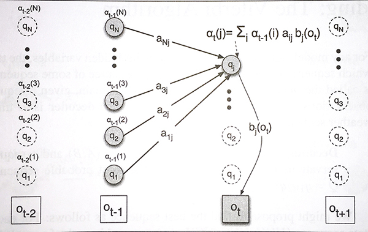
6.7.4 Decoding problem (Viterbi algorithm)
The decoding problem: Given an observation sequence O and a HMM λ = (A,B), discover the the best hidden state sequence Q. Viterbi Algorithm solves decoding using dynamic programming.
- Table \(v_t(j)\): the probability that the HMM is in state \(q_j\) after seeing the first \(t\) observations, and passing through the most probable state sequence \(q_0, q_1, \dots, q_{t-1}\).
\[ v_t(j) = \max_{q_0, \dots, q_{t-1}} p(q_0, \dots, q_{t-1}, o_1, \dots, o_t, q_t = j | \lambda ) = \max p(Q_t(j), O_t | \lambda) \]
- Viterbi algorithm updates the table using
\[ v_t(j) = \max_{i=1}^N v_{t-1}(i) \cdot a_{ij} \cdot b_j(o_t) \]
6.7.5 Learning problem
- The learning problem: Given an observation unlabeled sequence O and the set of states in HMM, learn the HMM parameters A and B.
- Solve using backward-forward (aka Baum-Welch) algorithm.
- Backward probability: \(\beta_t(i)\), the total probability of all paths from state \(q_i\) that emit observations from time \((t+1)\) to the end.
\[\beta_t(i) = p(o_{t+1}, o_{t+2},\dots, o_T | q_t=i, \lambda ) \]
7 Principle of Programming Languages
7.1 Background
7.1.1 Several Programming paradigm
- Imperative: uses statements that change a program’s state
- Declarative: expresses the logic of a computation without describing its control flow without requiring the programmer to specify an exact procedure to follow.
- Functional: attempts to minimize side effects.
7.2 OCaml
7.2.1 Variable types
- The
unittype is actually a 0-tuple. - A regular variable can be viewed as a 1-tuple.
- record: list of key value pairs:
type point = {x:float; y:float} - variant: unified way of representing object of different types in a single list:
type number = | Int of int | Float of float
7.2.2 Polymorphism
In Ocaml, a function obtained through partial application is not polymorphic enough. Polymorphism is introduced only through the let construct, and results from application are weakly polymorphic.
let f x y = () ;; (* val f : 'a -> 'b -> unit = <fun> *) f 2 ;; (* - : '_a -> unit = <fun> *)
7.3 Operational Semantics
- Syntax
- the set of rules governing the formation of expressions in a programming language
- Semantics
- the meaning of expressions
- Operational semantics
- a mathematical model of programming language execution; an interpreter defined mathematically. It defines computation relation: \(e \Rightarrow v\).
- Abstract syntax
- A term in an abstract syntax is represented as a syntax tree in which each operation to be performed is a node and each operand to that operation is a child of that node.
- Concrete syntax
- Concrete syntax of a language describes the textual representation of an expression in the language.
7.3.1 BNF (Backus-Naur Form)
- BNF is a standard grammar formalism for defining language syntax.
- All BNF grammars comprise terminals, non-terminals (aka syntactic categories), and production rules.
- General form of production rules:
<non-terminal> -> <form1> | ... |<formn> - Abstract syntax: a term in an abstract syntax is represented as a syntax tree, in which each operation to be performed is a node and each operand is a child of that node.
- Normalizing: a language is normalizing if for all expressions \(e\), there is some value \(v\) such that \(e\Rightarrow v\).
7.3.2 Variable substitution
- Bound occurrence
- Any occurrence of variable \(x\) in the expression \(\fun x \to e\) are bound in \(e\). Note that \(x\) is bound in \(e\) but not bound in \(e_2\) in this example: \(\fun x \to e \mbox{ in } e_2\)
- Free occurrence
- A variable \(x\) is free in \(e\) if it is not bound in \(e\).
- Close expressions
- An expression \(e\) is closed if it contains no free variable occurrences. All programs we execute are closed.
- Variable substitution \(e[e'/x]\)
- The variable substitution of \(x\) for \(e'\) in \(e\) is the expression resulting in from replacing all free occurrences of \(x\) in \(e'\) with \(e'\).
- α-conversion
- replacing a variable definition and all occurrences bounded to it with a different name, to improve readability.
7.3.3 Y-combinator
In λ-calculus self-reference or recursion is not allowed, but we can achieve self-reference without directly using self-reference.
Let \(r = \lambda x.(\mathrm{expr})\) be the recursive function to construct. Define another function \(g\) that takes \(r\) as an input argument \[g = \lambda r. \lambda x.(\mathrm{expr})\] then \(g r\) will be the recursive function. On the other hand, \(r\) itself is such a recursive function, i.e., \(r = g r\). The problem becomes to find the fixed point of function \(g\). The Y-combinator defined as \[Y := \lambda f.(\lambda x.f (x ~ x)) ~ (\lambda x.f (x ~ x))\] could return a fixed point for a function \(g\) in that \(Y g = g (Y g)\). Therefore, \(r =Y g\) is such a recursive function.
7.4 Operational equivalence
- Operational equivalence (informal)
- Two programs expressions are equivalent \(\iff\) one can be replaced with the other one at any place , and no external change in behavior will be noticed.
- Operational equivalence
- Two expressions are equivalent if in any possible context, one terminates if the other does. Nothing is said about the relationship between \(v\) and \(v'\), but they must be very similar. \(e \cong e' \iff \forall\) program context \(C\) such that \(C[e]\To v\) for some \(v\) if and only if \(C[e']\To v'\) for some \(v'\)
- Touch
- An expression is said to touch one of its sub-expressions if the evaluation of the expression causes the evaluation of that sub-expression.
7.4.1 Properties of operational equivalence
- Reflexivity
- \(e\) is equivalent to itself; \(e\cong e\)
- Symmetry
- If \(e \cong e'\), then \(e' \cong e\)
- Transitivity
- If \(e_1 \cong e_2\) and \(e_2 \cong e_3\), then \(e_1 \cong e_3\)
- Congruence
- If \(e\cong e'\), then \(C[e] \cong C[e']\)
- β-equivalence
- Function application; \((\fun x\to e)\; v \cong e[v/x]\)
- η-equivalence
- η-conversion is similar to the proxy pattern in OOSE. \(\fun x \to e \cong (\fun z \to \fun x \to e)\; z'\)
- α-equivalence
- Rename function argument; \(\fun x \to e \cong \fun y \to e[y/x]\)
- Others
- If \(e\To v\) then \(e\cong v\)
7.4.2 Some examples
- \(x \not\cong x+1-1\)
- \(x\) may not necessarily be integer type. Consider the program context \((\fun x \to \bullet)\; \True\). Equivalence cannot hold if one side makes assumptions about the type of operand while the other side does not.
- \((0\; 0) \cong (\fun x\to x\;x)\;(\fun x\to x\;x)\)
- If \(e\not\To v\) for any \(v\) and \(e'\not\To v'\) for any \(v'\), and both \(e, e'\) are closed expressions, then \(e\cong e'\).
7.5 Abstract Syntax and Semantics
7.5.1 Basic Fb
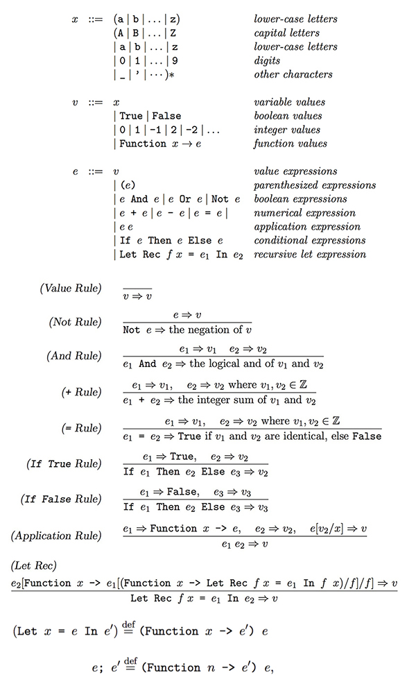
7.5.2 FbV, Fb with Variant
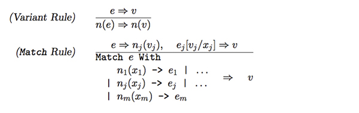
7.5.3 FbS, Fb with State
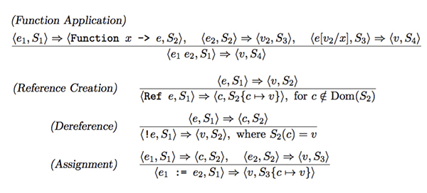
7.5.4 FbX, Fb with Exception
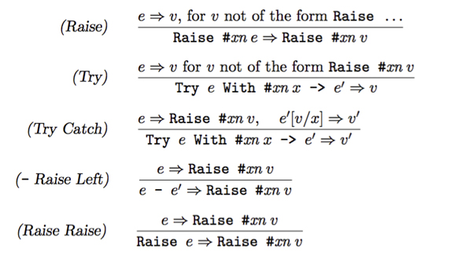
7.6 State
7.7 Type Systems
7.7.1 Concepts
- Type
- A type is a property with which a program is implicitly or explicitly annotated before runtime.
- Type Systems
- Type systems are rule-based formal systems that are similar to operational semantics.
- Type environment \(\Gamma\)
- A type environment \(\Gamma\) is a set \(\{x_1 : \tau_1, \dots, x_n : \tau_n\}\) of bindings of free variables types. We write \(\Gamma(x) = \tau\) to indicate that \(\tau\) is the innermost or rightmost type for \(x\) in \(\Gamma\).
- Type assertion
- \(\Gamma \vdash e: \tau\) indicates that in type environment \(\Gamma\), \(e\) is of type \(\tau\).
- Type inference
- Type inference algorithms infer types and check that the program body has no type errors.
- Type checking
- A type-checking algorithm takes as input a type environment \(\Gamma\) and an expression \(e\). It either returns the type \(\tau\) of \(e\), or it raises an exception indicating that \(e\) is not well-typed in the environment \(\Gamma\).
- Type soundness theorem
- If \(\Gamma \vdash e: \tau\), then in the process of evaluating \(e\), a "stuck state" is never reached.
- Subtyping
- Subtyping allows records and object polymorphism to type check. \(\tau <:\tau'\) means \(\tau\) is a subtype of \(\tau'\), and an object of type \(\tau\) may also be considered as an object of type \(\tau'\).
7.7.2 Level of type systems
- Static type systems
- Types are checked by the compiler, and type-unsafe programs fails to compile.
- Dynamic type systems
- Dynamic type systems check types information at runtime.
- Untyped
- In an untyped system there is no type check at all and anomalous behaviors can result at runtime. Untyped system are more expressive.
7.7.3 Subtyping
- If record B = A + (some additional fields), then B is a subtype of A; \(B <: A\).
- If function \(f <: g\), then \(f\) takes less and gives more.
7.8 Concurrency
7.8.1 Concepts
- Concurrency
- A concurrent computation works on more than one things at once.
- Parallelism
- Parallel computing uses multiple processing elements simultaneously to solve one problem.
- Race condition
- Two operations are interleaved and leaves the data in an inconsistent condition.
- Deadlock
- Threads may need to wait for resources to free up (where were locked to prevent race condition), can can get in a cycle of waiting.
- Process
- An executing instance of a program is called a process
- Each process is started with a single thread, often called the primary thread, but can create additional threads from any of its threads.
- Thread
- A thread is the entity within a process that can be scheduled for execution.
- All threads of a process share its virtual address space and system resources.
- In Java, each thread has its own runtime stack but share only one heap.
7.8.2 Actor model
- Each actor is an autonomous, distributed agent, and has a name.
- All communication between actors is via explicit messaging, no shared memory.
- All messaging is asynchronous: senders never wait for replies from receivers.
- The arrival order of messages is nondeterministic.
- Actors can create other actors.
- Only one message is processed at a time by an actor.
- Concurrency is achieved by the fact that many actors can be processing their messages in parallel, not by concurrent behavior of an individual actor.
- Actors can never accept messages in the middle of processing their original messages.
7.8.3 AFbV
- Messages are of variant type:
`typename(argument) - Send a message: actor-name ← message
- Behavior is a function and takes the form
fun me -> fun data -> fun message -> fun message -> ... - Create an actor:
Create(behavior1, data)returns name of the new actor- Assign a fresh actor name:
name2 - Get new behavior via application:
behavior2 = behavior1 name2 data - Added a pair
<name2, hehevior2>
- Assign a fresh actor name:
- Process a message:
- Obtain
<name, behavior1>and<name <- message> - Process message
behavior2 = behavior1 message - Add pair
<name, behavior2>
- Obtain
8 Graph Theory
8.1 Notations
8.1.1 Graph
- \(P_n\): path with \(n\) vertices
- \(C_n\): cycle with \(n\) vertices
- \(K_n\): complete graph with \(n\) vertices
- \(K_{r,s}\): complete bipartite graph with sets of size \(r\) and \(s\)
8.1.2 Graph operations
- \(\overline{G}\) : complement or inverse: a graph on the same vertices such that two distinct vertices of \(\overline{G}\) are adjacent \(\iff\) they are not adjacent in G.
- \(L(G)\) line graph : the graph whose vertices are edges in \(G\) and two vertices in \(L(G)\) are adjacent \(\iff\) their corresponding edges are incident in \(G\).
- \([S,T]\) : given \(S, T\subseteq V(G)\), we write \([S,T]\) as the set of edges having one endpoint in \(S\) and the other endpoint in \(T\).
- \(G[T]\) : induced graph * is composed of vertex set \(T\) together with edges whose endpoints are both in \(T\). It is noted that \(G[T] = G - \overline{T}\).
- \(G\vee H\) join: of simple graph \(G\) and \(H\): the graph obtained from the disjoint union \(G+H\) by adding the edges \(\{xy: x\in V(G), y\in V(H)\}\) (Def 3.3.6)
- \(G\Box H\) (cartesian product): the graph with vertex set \(V(G)\times V(H)\) specified by putting \((u,v)\) adjacent to \((u',v')\) if and only if (1) \(u=u'\) and \(vv'\in E(H)\), or (2) \(v=v'\) and \(uu'\in E(G)\).
- \(N_G(v)\) or \(N(v)\): neighborhood is the set of vertices adjacent to \(v\)
- \(G\cdot e\): contraction of edge \(e\); replace its two endpoints with a single vertex.
8.1.3 Size
- order \(n(G)\): the number of vertices of a graph \(G\)
- size \(e(G)\): the number of edges in a graph \(G\)
- \(o(G)\): number of components with odd order.
- \(\alpha(G)\): max size of independent set
- \(\alpha'(G)\): max size of matching
- \(\beta(G)\): min size of vertex cover
- \(\beta'(G)\): min size of edge cover
- * \(d_G(v)\) or $d(v)$*: degree is the number of edges incident to \(v\)
- \(\tau(G)\): number of spanning trees of \(G\)
- \(c(G)\): number of components
- \(g(G)\): girth; length of shortest cycle.
- diameter: max length of a shortest \(uv\) -path for all \(u, v\).</li>
8.1.4 Connectivity
- \(\kappa(G)\): connectivity of a graph (min seperating set \(S\) of vertices), such that \(G\setminus S\) is disconnected or has only one vertex. \(k\) -connected: connectivity is at least \(k\)
- \(\kappa'(G)\): edge-connectivity; min size of a disconnecting set of edges.
- \(\kappa(x,y)\): min size of \(x,y\) -cut (vertices)
- \(\kappa'(x,y)\): min number of edges whose deletion disconnects \(x\) and \(y\).
- \(\lambda(x,y)\): max size of a set of pairwise internally disjoint \(x,y\) -paths.
- \(\lambda'(x,y)\): max number of pairwise edge-disjoint \(x,y\) -paths.
- \(\delta(G)\): min vertex degree
- \(\Delta(G)\) clique number: max vertex degree
- \(\mu(xy)\): multiplicity of edge \(xy\)
- \(\mu(G)\): max edge multiplicity in \(G\)
8.1.5 Coloring
- \(\chi(G)\): chromatic number; the least \(k\) such that \(G\) is \(k\) -colorable.
- \(\chi'(G)\): edge-chromatic number (or chormatic index); the least \(k\) such that loopless graph \(G\) is \(k\) -edge-colorable.
- \(\omega(G)\): clique number; the max size of a set of pairwise adjacent vertices in \(G\).
- \(\chi(G;k)\): chromatic polynomial; number of proper colorings \(f: V(G)\to [k]\).
- \(\theta(G)\) clique cover number: the min number of cliques in \(G\) needed to cover \(V(G)\).
8.2 Basic Graph
8.2.1 Directed graphs
- digraph: directed graph
- edge \(uv\): from tail \(u\) to head \(v\). v is successor of \(u\), and \(u\) is the predecessor of \(v\).
- An orientation of a graph \(G\) is a digraph \(D\) obtained from \(G\) by choosing an orientation (\(x\to y\) or \(y\to x\)) for each edge.
- tournament: an orientation of a complete graph
- king: a vertex from which every vertex is reachable by a path of length at most 2.
- 1.4.29: Every tournament has a king.
8.2.2 Edges and connections
walk \(\supseteq\) trail (no repeated edges) \(\supseteq\) path (no repeated edges and vertices) \(\supseteq\) cycle
- walk: a list \((v_0, e_1, \dots, e_k, v_k)\), such that edge \(e_i\) has endpoints \(v_{i-1}\) and \(v_i\). Both edges and vertices can be repeated.
- trail: a walk with no repeated edge
- loop: an edge whose endpoints are equal
- path: a simple graph whose vertices can be ordered so that two vertices are adjacent if and only they are consecutive in the list.
- cycle: a graph with an equal number of vertices and edges whose vertices form a closed chain.
- a maximal path: a path that is not contained in a longer path.
- circuit: a closed trail
8.2.3 Vertices
- clique: a set of pairwise adjacent vertices
Properties
- cut-vertex: a vertex whose deletion increases the number of components.
- isolated vertex: a vertex of degree \(0\)
8.2.4 Graphs
- Special graphs
- complete graph: every pair of distinct vertices is adjacent.
- biclique: a complete bipartite graph
\[ K_r + K_s = \overline{K_{r,s}} \]
- simple or strict graph: an unweighted, undirected graph containing no loops or multiple edges.
- connected graph: every pair of vertices is connected.
- bigraph: bipartite graph; a graph \(G\) is bipartite if \(V(G)\) is the union of two disjoint (possibly empty) independent sets
- even: all vertices are of even degree
- regular: if maximum degree is equal to minimum degree \(\Delta(G)=\delta(G)\).
- tree: a connected and acyclic graph
- Chord
- chord of a cycle \(C\) is an edge not in \(C\) whose endpoints lie in \(C\)
- chordless cycle in \(G\) is a cycle of length at least 4 that has no chord
- chordal: a simple graph that has no chordless cycle.
- Graph operations
- component: maximal connected subgraph
8.2.5 Graph isomorphism
An isomorphism of graphs \(G\) and \(H\) is a bijection between the vertex sets \[ f: V(G) \to V(H) \] such that any two vertices \(u\) and \(v\) of \(G\) are adjacent if and only if \(f(u)\) and \(f(v)\) are adjacent in \(H\).
8.3 Tree
8.3.1 Definitions
- leaf or pendant vertex: a vertex of degree 1.
- n-vertex star: \(K_{1,n-1}\)
8.3.2 Properties of a tree
- connected and acyclic by definition
- bipartite
- \(e(T) = n(T)-1\)
- \(uv\) -path is unique
- \(\not \exists\) induced cycle.
- 4.1.18: Every edge of a tree is a block.
- 2.1.3: Everry tree has at least two leaves (\(|n(T)| \ge 2\)).
8.3.3 Spanning tree
- spanning tree: a subgraph that is a tree and includes all of the vertices.
- 2.2.3 Cayley: For a set \(S\) of size \(n\), there are \(n^{n-1}\) trees with vertex set \(S\)
- 2.2.8: \(\tau(G) = \tau(G-e) + \tau(G\cdot e)\)
8.4 Matching and Factors
8.4.1 Definitions
- A matching in a graph \(G\) is a set of non-loop edges with no shared endpoints.
- The vertices incident to the edges of a matching \(M\) are saturated by \(M\).
- perfect matching: a matching that saturates every vertex in \(G\).
- M-*alternating* path: a path that alternate between edges in \(M\) and edges not in \(M\).
- M-*augmenting* path: an M-alternating path whose endpoints are unsaturated by \(M\).
- vertex cover: a set \(Q\in V(G)\) that contains at least one endpoints of every edge.
- edge cover: a set of edges such that every vertex of the graph is incident to at least one edge of the set. Note that an edge cover exists only if \(G\) has no isolated vertex.
- independent set (stable set): a set of pairwise nonadjacent vertices
- k-factor: a spanning k-regular subgraph of \(G\)
8.4.2 Theorems
- \(U\) is a stable set \(\iff\) \(V\setminus U\) is a vertex cover
- \(M\) is maximum matching in \(G \iff G\) has no M-augmenting path
- \(M\) is a maximal matching \(\iff V(M)\) is a vertex cover
- \(|\mathrm{stable set}| \le |\mathrm{edge cover}|\)
- \(|\mathrm{matching}| \le |\mathrm{vertex cover}|\)
- Gallai's theorem: If \(G\) has no isolated vertex, then
\[ |\mathrm{max stable set}| + |\mathrm{min vertex cover}| = |V| = |\mathrm{max matching}| + |\mathrm{min edge cover}| \]
- Berge's theorem: a matching \(M\) is maximum \(\iff\) there is no M-agumenting path.
- Konig's theorem: If \(G\) is bipartite, \(|\mathrm{maximum macthing}| = |\mathrm{minimum vertex cover}|\)
- Hall's theorem: An \(X, Y\) -bigraph \(G\) has a matching that saturates \(X \iff |N(S)| \ge |S|\) for all \(S\subseteq X\)
- Tutte: \(G\) has a 1-factor \(\iff o(G\setminus S)\le |\mathrm{S}| \forall S\subseteq V(G)\)
- Berge-Tutte Formula: \(|\mathrm{max matching}| = \min_{S\subseteq V(G)} n(G) - o(G-S) + |S|\)
8.4.3 Stable matching
8.5 Cuts and Connectivity
8.5.1 Definitions
- seperating set, or vertex cut: a set \(S\subseteq V(G)\) such that \(G\setminus S\) is disconnected.
- disconnecting set of edges: a set \(F\subseteq E(G)\) such that \(G\setminus F\) is disconnected.
- cut-edge: an edge whose deletion increases the number of components.
- edge-cut: an edge set of the form \([S,\overline{S}]\), where \(S\subset V(G)\) and \(S\ne \emptyset\)
- bond: minimal nonempty edge cut.
- block: a maximal connected subgraph that has no cut-vertex.
- Two \(u,v\) -paths are internally disjoint if they have no common internal vertex.
- subdivision: replacing an edge \(uv\) with a path \(\{u, w, v\}\).
- ear: a maximal path whose internal vertices have degree 2 in \(G\)
- ear decomposition of \(G\) is a decomposition \(P_0, \dots, P_k\) such that \(P_0\) is a cycle and \(P_i\) for \(i\ge 1\) is an ear of \(\cup_{k=0}^{i} P_k\)
- \(x,y\) -separator or cut: a set \(S\subseteq V(G)-x-y\) if \(G-S\) has no \(x,y\) -path.
- \(X,Y\) -path: a path having first vertex in \(X\), last vertex in \(Y\), and no other vertex in \(X\cup Y\).
- \(x,U\) -fan: a set of paths from \(x\) to vertex set \(U\) such that any two of them share only \(x\).
- block-cutpoint graph of \(G\): a bipartite graph \(H=(X\cup Y, E(H))\), where \(X=\) cut-vertices \(v_i\) of \(G\), \(Y=\) blocks \(B_j\) of \(G\), and \(v_i B_j\in E(H) \iff v_i\in B_j\)
8.5.2 Theorems
- 4.1.9 Whitney: If \(G\) is a simple graph then
\[ \kappa(G)\le \kappa'(G) \le \delta(G) \]
<li>*4.2.17 Menger*:
- If \(x,y\in V(G)\) and \(xy\not\in E(G)\), then \(\kappa(x,y) = \lambda(x,y)\)
- If \(x,y\in V(G)\) and \(x\ne y\), then \(\kappa'(x,y) = \lambda'(x,y)\)
</li>
- 4.2.25 CSDR: Families \(\vA = A_1, \dots, A_m\) and \(\vB = B_1,\dots,B_m\) have a common SDR
\[\iff \big| (\cup_{i\in I} A_i) \cap (\cup_{j\in J} B_j) \big| \ge |I| + |J| - m \; \forall I, J \subseteq [m] \]
8.5.3 2-connected graphs
- 4.2.2 Whitney: A graph \(G\) having at least 3 vertices is 2-connected \(\iff\) for each pair of vertices \(x,y\) there exist internally disjoint \(x,y\) -paths in \(G\).
- 4.2.6 Subdivision: If \(G\) is 2-connected, then the graph \(G'\) obtained by subdividing an edge of \(G\) is 2-connected.
- 4.2.8 ear: A graph is 2-connected \(\iff\) it has an ear decomposition.
- 4.2.4 Characterization
If \(V(G)\ge 3\), the followings are equivalent and characterize 2-connected graphs:
- \(G\) is connected and has no cut-vertex.
- \(\forall x, y\in V(G)\), there are internally disjoint \(x,y\) -paths.
- \(\forall x, y\in V(G)\), there is a cycle through \(x,y\).
- \(\delta(G)\ge 1\), and every pair of edges in \(G\) lies on a common cycle.
8.5.4 \(k\) -connected graphs
- 4.2.3 Expansion Lemma: If \(G\) is \(k\) -connected, and \(G'\) obtained from \(G\) by adding a new vertex \(y\) with at least \(k\) neighbors in \(G\), then \(G'\) is also \(k\) -connected.
- 4.2.23 Fan Lemma: \(G\) is \(k\) -connected \(\iff |V(G)| \ge k+1\) and \(\forall x, U\) with \(|U|\ge k\), \(\exists\) an \(x,U\) -fan of size \(k\).
- 4.2.24 Dirac: If \(G\) is \(k\) -connected (\(k\ge2\)), and \(S\) is a set of \(k\) vertices in \(G\), then \(G\) has a cycle including \(S\) in its vertex set.
8.5.5 Block
- 4.1.18: An edge is a block of \(G\) \(\iff\) it is a cut-edge in \(G\).
- 4.1.18: If a block has more than two vertices, then it is 2-connected.
- 4.1.19: Two blocks in a graph share at most one vertex.
- 4.1.20: block-cutpoint graph of a graph is a forest.
8.6 Coloring of graphs
8.6.1 Definitions
- \(k\) -coloring of graph is a labeling \(f: V(G)\to S\), where \(|S| = k\). The labels are colors; the vertices of one color form a color class.
- proper coloring: adjacent vertices have different colors.
- \(k\) -colorable: if a graph has a proper \(k\) -coloring.
- \(k\) -chromatic: if \(\chi(G)=k\)
- \(k\) -critical: if \(\chi(H)< \chi(G)=k\) for all subgraph \(H\) of \(G\)
- perfect: if \(\chi(H) = \omega(H)\) holds for \(G\) and all its induced subgraph. \(\chi(G[A]) = \omega(G[A])\; \forall A\in V(G)\)
- hereditary: a family of graphs \(G\) is hereditary if every induced subgraph of a graph in \(G\) is also a graph in \(G\).
8.6.2 Theorems (vertex coloring)
- 5.1.7: For every graph \(G\), \(\chi(G)\ge \omega(G)\) and \(\chi(G)\ge n(G)\big/ \alpha(G)\)
- 5.1.8:
\[\chi(G+H) = \max\big\{ \chi(H), \chi(G) \big\} \] \[\chi(G\vee H) = \chi(H) + \chi(G)\]
- 5.1.13: \(\chi(G)\le \Delta(G) + 1\)
- P2 HW9, Exercise 5.1.3: \(\chi(G) = \max_i(G_i)\), where \(G_i\) are the blocks of \(G\).
- 5.1.22 Brooks: If \(G\) is a connected other than complete graph or an odd cycle, then \(\chi(G)\le \Delta(G)\)
- 5.3.18: \(\theta(G) = \chi(\overline{G})\)
8.6.3 Theorems (edge coloring)
- 7.1.3: \(\chi'(G) \ge \Delta(G)\)
- 7.1.7 Konig: If \(G\) is bipartite, then \(\chi'(G) = \Delta(G)\)
- 7.1.10 Vizing: If \(G\) is a simple graph, then \(\chi'(G) \le \Delta(G) + 1\)
8.6.4 \(k\) -critical graph
8.6.5 Chromatic Polynomial
- 5.3.2: \(\chi(\overline{K_n}; k) = k^n\)
- 5.3.2: \(\chi(K_n; k) = \Pi_{i=0}^{n-1} (k-i) = P_n^k\)
- 5.3.3: If \(T\) is a tree with \(n\) vertices, then \(\chi(T; k) = k(k-1)^{n-1}\)
- 5.3.6 Chromatic Recurrence: If \(G\) is a simple graph and \(e\in E(G)\), then \(\chi(G; k) = \chi(G-e; k) - \chi(G\cdot e; k)\)
- 5.3.4: \(\chi(G; k) = \sum_{r=1}^{n(G)} p_r(G) k_{(r)}\), where \(p_r(G)\) is the number of partitions of \(V(G)\) into \(r\) nonempty independent sets, and \(k_{(r)} = \Pi_{i=0}^r (k-i)\)
- 5.3.27 Stanley: number of acyclic orientations of \(G\) is \((-1)^{n(G)} \chi(G; -1)\)
8.7 Special graphs
8.7.1 Vertex degree
- 1.2.25: If \(\delta(G)\ge 2\), then \(G\) contains a cycle.
- HW2 P9: If \(\delta(G) = k\), then \(G\) contains a path of length at least \(k\) and a cycle of length at least \(k+1\).
- 1.2.28: If simple graph \(\delta(G)\ge k\), then \(G\) has \(|\mathrm{path}| \ge k\). If \(k\ge 2\), \(G\) has \(|\mathrm{cycle}| \ge k+1\)
8.7.2 Bipartite Graph
8.7.3 No even cycle
- P5 HW8: If \(G\) has no isolated vertex nor even cycle, then every block of \(G\) is a single edge or an odd cycle.
- P3 HW9: If \(G\) has no even cycle, then \(\chi(G)\le 3\)
8.7.4 Line graphs
- 7.1.1 \(\alpha'(G) = \alpha(L(G))\)
8.8 Several topics
8.8.1 Transversing a graph
- Eulerian circuit: a closed trail (no repeated edges) containing all edges.
- 1.2.26: A connected graph \(G\) is Eulerian \(\iff\) it is even.
- 1.4.24: A digraph is Eulerian \(\iff\) \(d^+(v) = d^-(v)\) for each vertex \(v\), and the underlying graph has at most one nontrivial component.
- Hamiltonian cycle: a cycle that visits each vertex exactly once.
8.8.2 Bijection
A function \(f: X\to Y\) is a bijection \(\iff\) it is injective and surjective.
- injective (one-to-one): \(f\) preserves distinctness
- surjective (onto): every \(y\in Y\) has a \(x\in X\) such that \(f(x) = y\).
8.8.3 Some famous graphs
- Hypercube
n-cube or hypercube \(Q_n\): \(V(Q_n)\) is the set of all n-typles of \(\{0,1\}\), and two vertices are adjacent \(\iff\) their correponding tuples differ in exactly 1 coordinates.
- Properties
<ol>
- \(n(Q_n) = 2^n, d(v) = n, e(Q_n) = n 2^{n-1}\)
- bipartite.
- Size of min seperating set: \(\kappa(Q_n) = n\)
- \(Q_n = Q_{n-1}\Box K_2\) when \(k\ge 1\)
</ol>
*Boolean Lattice \(BL_n\) Vertex set of BL is the set of all subsets of \(\{1,2,\dots,n\}\). Two subsets are adjacent \(\iff\) their symmetric difference has exactly one element.
- Properties
<ol>
- \(Q_n\) and \(BL_n\) are isomorphic.
</ol>
- Properties
- Graph of permutations
Graph of permutations: \(V(G_n)\) is the set of all permutations of \(\{1,2,\dots,n\}\), and two vertices are adjacent \(\iff\) they differ by changing a pair of entries.
8.8.4 Techniques in graph theory
- Extremality
When considering structures of a given type, choosing an example that is extreme in some sense may yield useful additional information. Examples: If \(\delta(G)=2\), then \(G\) contains a cycle Proof: Let \(P\) be a maximal path in \(G\), and let \(u\) be an endpoint in \(P\). By definition \(P\) cannot be extended, then \(N(u)\in V(P)\). Since \(d(u)\ge 2\), it has a neighbor \(v\) via an edge not in \(P\). The edge \(uv\) completes a cycle.
- Counting two ways
Examples:
- Handshaking Lemma: \(\sum_v d(v) = 2\cdot e(G)\)
- Every \(k\) -regular bipartite graph has a perfect matching.
8.9 Plannar Graphs
8.9.1 Definitions
8.9.2 Theorems
- 6.1.2: \(K_5\) and \(K_{3,3}\) cannot be drawn without crossings
8.10 Random Graph
8.10.1 Definitions
- Ramsey number:
8.10.2 Ramsey Theory
8.10.3 Probability and Expectation
- \(P[\cup_i A_i] = \sum_i P[A_i]\)
- Markov's Inequality: probability of \(X\) being large is small.
\[P[X\ge a] \le {E[X] \over a} \]
- Chebyshev's inequility: \(X\) cannot deviate a lot from its mean too often.
\[ P\big[|X-\mu| \ge \lambda \big] \le {\sigma^2\over \lambda^2} \]
8.10.4 Several results
- Probabilities
- Having \(m\) edges: $pm (1-p){n\choose2} - m $
- \(H\) (with \(l\) edges) is an induced subgraph of \(G\): \(p^l (1-p)^{{k\choose2} - l}\)
- Diestel 11.1.2: \(G\in \vG(n,p)\) has a set of \(k\) independent set: \(P[\alpha(G)\ge k] \le {n\choose k} (1-p)^{k\choose 2}\)
- Diestel 11.1.2: \(G\in \vG(n,p)\) has a set of \(k\) clique: \(P[\omega(G)\ge k] \ge {n\choose k} p^{k\choose 2}\)
- HW11 P6: a vertex having degree \(k\): \({n-1\choose k} p^k (1-p)^{n-1-k}\)
- Expected numbers
- Diestel 11.1.5: number of \(k\) -cycles \( = p^k\cdot {n\choose k} k! \big/ 2k\)
- HW11 P6: number of degree \(k\) vertices \( = k{n-1\choose k} p^k (1-p)^{n-1-k}\)
- HW11 P8: number of spanning trees \( = n^{n-2} \cdot p^{n-1}\)
- \(P[X=0]\)
Let \(X\) be integer property, \(\mu = E[X]\) and \(\sigma^2 = E[(X-\mu)^2]\)
- Lower bound:
- Upper bound:
9 Algorithm
9.1 Asymptotic bounds
9.1.1 Definitions
- \(f = O(g)\): Upper bound; There exists positive constants \(c, n_0\), such that \(0 \le f \le c\cdot g\) for all \(n\ge n_0\)
- \(f = \Omega(g)\): Lower bound; There exist positive constants \(c, n_0\) such that \(0 \le c\cdot g \le f\) for all \(n\ge n_0\)
- \(f = \Theta(g)\): Double-side bound
- \(f = o(g)\): Loose upper bound; For any (small) positive constant \(c\), there exists a positive constant \(n_0\) such that \(0 \le f < c\cdot g\) for all \(n\ge n_0\)
- \(f = \omega(g)\): Loose upper bound; For any (large) positive constant \(c\), there exists a positive constant \(n_0\) such that \(0 \le c\cdot g < f\) for all \(n\ge n_0\)
9.1.2 Rules
- Transpose symmetry
- \(f = O(g) \iff g = \Omega(f)\)
- \(f = o(g) \iff g = \omega(f)\)
- Combinations
- \(f + g = \Omega(\min(f, g))\)
- \(f + g = O(\max(f, g))\)
- \(f + o(f) = \Theta(f)\)
9.2 Bit Manipulation
9.2.1 Basic Manipulations and their Applications
- Construct a bit-mask
000100 : 1 << 2000111 : (1 << 3) - 1(Note that shift operation has a lower precedence)111111 : ~0U001100 : (1 << 4) - (1 << 2)
- AND
&- Get the value of bit:
x & mask - Check whether a number is odd:
x & 1 - Set value of a bit to 0:
x &= ~mask
- Get the value of bit:
- OR
|- Set value of a bit to 1:
x |= mask
- Set value of a bit to 1:
- Exclusive OR, XOR
^- Result is true is the two operands are different
x ^ y == ~x ^ ~y;
- Self inverse:
(x ^ a) ^ a == x - Flip a bit:
x ^= mask(becauseb ^ 1 == 1 - bandb ^ 0 == b)
- Shift
- Note that in C++ it would pad with 1 when right-shift a negative integer
- Swap lower and higher 16 bits:
(x << 16) | (x >> 16)
9.2.2 Two's Complement
- Negative numbers are usually represented as its two's complement: (
-x)bin \(=\) 2N \(-\) (x)bin - Using this representation, integer addition is simply the same as binary addition.
- Some examples
| Decimal Number | Binary Representation |
|---|---|
| \(1\) | 00000000000000000000000000000001 |
| \(0\) | 00000000000000000000000000000000 |
| \(-1\) | 11111111111111111111111111111111 |
| \(-2\) | 11111111111111111111111111111110 |
| \(-3\) | 11111111111111111111111111111101 |
| \(-4\) | 11111111111111111111111111111100 |
- Note that (
~x)bin \(=\) (11111111111111111111111111111111) \(-\) (x)bin \(=\) 2N \(- 1 -\) (x)bin \(= -1 -\) (x)bin, because 2N overflowed in binary representation. We have an interesting fact: (~x)bin \(=\) (- x - 1)bin
9.2.3 Increment and Decrement
- Increment flips the rightmost 0 to 1, and all tail 1 to 0, leaving leading bits unchanged.
- Decrement flips the rightmost 1 to 0, and all tail 0 to 1, leaving leading bits unchanged.
- Both increment and decrement flips the right bits.
- Some examples about decrement
x |
010000011010 1000 | |
x-1 |
010000011010 0111 | |
x & (x-1) |
010000011010 0000 | Flip the rightmost 1 -> 0 |
x or (x-1) |
010000011010 1111 | Tail 1000 -> 1111 |
x & ~(x-1) |
000000000000 1000 | Extract the rightmost 1 |
- Some examples about increment
x |
010000011010 0111 | |
x+1 |
010000011010 1000 | |
x & (x+1) |
010000011010 0000 | Tail 0111 -> 0000 |
x or (x+1) |
010000011010 1111 | Flip the rightmost 0 -> 1 |
9.3 Dynamic Programming (DP)
9.3.1 Ideas
- Multi-stage optimization: the decisions we make at some point are influenced by the decisions we made earlier.
- Programming in here means a way of tabulation.
- Similar to Divide-and-Conquer but with overlapping subproblems.
- Elements of dynamic programming
Two key ingredients that an optimization problem must have in order for DP to apply.
- Optimal substructure: an optimal solution to the problem contains within it optimal solutions to subproblems.
- Subproblems must be independent. The solution to one subproblem does not affect the solution to another subproblem of the same problem. The subproblems should not share resources.
- Overlapping subproblems: the space of subproblems must be small in the sense that a recursive algorithm solve the same subproblems over and over, rather than always generating new subproblems.
- DP takes advantages of overlapping subproblems by solving each subproblem once and storing the solution in a table.
9.3.2 Examples
- Longest Common Subsequence
Given a sequence \(X = (x_1, x_2, \dots, x_m)\), where each \(x_i\) is an element of some alphabet, another sequence \(Z = (z_1, z_2, \dots, z_k)\) is a subsequence of \(X\) if there exists a strictly increasing sequence \((i_1, i_2, \dots, i_k)\) of indices of \(X\) such that for all \(j = 1,2,\dots, k\) we have \(x_{i_j} = z_j\). In the longest common subsequence problem, we are given two sequences \(X\) and \(Y\), and we wish to find a maximum length common subsequence of \(X\) and \(Y\).
- Optimal substructure
Let \(X, Y\) be sequences and \(X\) be a LCS of \(X\) and \(Y\).
- If \(x_m = y_n\), then \(z_k = x_m = y_n\) and \(Z_{k-1}\) is an LCS of \(X_{m-1}\) and \(Y_{n-1}\).
- IF \(x_m\ne y_n\), then \(z_k\ne x_m\) implies that \(Z\) is LCS of \(X_{m-1}\) and \(Y\).
- IF \(x_m\ne y_n\), then \(z_k\ne y_n\) implies that \(Z\) is LCS of \(X\) and \(Y_{n-1}\).
- Recursive formula
Define \(c[i,j]\) to be the length of an LCS of the sequence \(X_i\) and \(Y_j\). \[ c[i,j] = \begin{cases} 0 & \mbox{if $i = 0$ or $j = 0$} \\ c[i-1, j-1] + 1 & \mbox{if $i, j >0$ and $x_i = y_j$} \\ \max\big(c[i, j-1], c[i-1,j] \big) & \mbox{if $i,j>0$ and $x_i\ne y_j$} \end{cases} \]
- Optimal substructure
- Optimal binary search tree
Given probability of accessing each node \(k_i\) in the BST, we want to minimize total cost \(\sum_{i=1}^n p_i (\mbox{depth}_T(k_i) + 1)\)
- Optimal substructure
To determine the optimal BST is to determine the root in each level. Let \(k_r\) be the root of optimal BST containing \((k_1, k_2, \dots, k_n)\), then the left subtree containing \((k_1, k_2, \dots, k_{r-1})\) and the right subtree \((k_{r+1}, \dots, k_n)\) must also be optimal.
- Recursive formula
Denote \(M[i,j]\) as the total cost of accessing optimal BST containing \((k_i, \dots, k_j)\). \[ M[i,j] = \]
- Optimal substructure
- Rod-cutting
- Matrix-chain multiplication
- 0-1 knapsack problem
Given the value \(v_i\) and weight \(w_i\) for each of \(n\) items and a knapsack of capacity \(W\) pounds, find the items that can fit in the knapsack and maximize total value.
- Optimal substructure
- Recursive formula
Denote \(V[k, w]\) as the value of the optimal solution to the first \(k\) items with constraint of weight \(w\). \[ V[k, w] = \begin{cases} 0 & \mbox{if $k=0$}\\ V[k-1, w] & \mbox{if $k\ne0$ and $w_k > w$} \\ \max\big( V[k-1, w], V[k-1, w-w_k] + v_k \big) & \mbox{otherwise} \end{cases}\]
- Optimal substructure
9.4 Graph
9.4.1 Traversing a graph
- BFS (Breath-first search)
- Algorithm implemented with a queue
- Initialization. Color all vertices as white and setup an empty queue
- Push the source \(u\) into the queue.
- While the queue is not empty, pull one vertex \(v\) from it, push all $v$'s white neighbors (which are marked gray after being enqueued) into the queue, and mark \(v\) as black.
- Properties of BFS
- Running time \(O(V + E)\)
- BFS expands the frontier between discovered and undiscovered vertices uniformly across the breadth of the frontier.
- It discovers all vertices at distance \(k\) from the source before discovering any vertex at distance \(k+1\).
- BFS tree = shortest-path tree
- Algorithm implemented with a queue
- DFS (Depth-first search)
- Algorithm implemented with a stack
Change the queue to stack in BFS.
- Recursive algorithm
DFS(v){ v.is_discovered = True For each edge {v, u} in v.Adj { if u.is_discovered == False { DFS(u) } } } - Properties of DFS
- Running time \(O(E+V)\)
- DFS recursively explores edges out of the most recently discovered vertex \(v\) that still has unexplored out-edges. Once all of $v$'s edges have been explored, DFS backtracks to previous vertices.
- DFS timestamps each vertex with discovery and finish time.
- In DFS, discovery and finishing times have parenthesis property.
- Edge partitions with DFS: tree edges, forward edges, backward edges, cross edges.
- Algorithm implemented with a stack
- Applications of DFS
- Topological sort
- Only a DAG (Directed Acyclic Graph) can be sorted.
- All edges go forward in a topologically sorted graph.
- Algorithm: Starting with an empty list, DFS a graph. When a node finished, put the node at the head of the list.
- Running time: \(O(E+V)\)
- Strongly Connected Components (SCC)
Algorithm:
- DFS(\(G^T\)) to get finishing times.
- Let v be the vertex in \(G\) with largest finishing time.
- Run DFS\((v)\) in \(G\) to define an SCC \(C\) of all nodes found in this DFS.
- Delete \(C\) from \(G\).
- Repeat from (1) until \(G\) is empty
- Two vertices \(u\) and \(v\) are equivalent if \(u\) is reachable from \(v\) and \(v\) is reachable from \(u\).
- SCC: a maximal set in which every pair of vertices are equivalent.
- Running time: \(O(E+V)\)
- The node with largest finishing time is in a source SCC.
- Other applications
- If a directed graph has a backward edge in DFS, then it is not DAG.
- Topological sort
9.4.2 Shortest paths
- Types of shortest path
- Single source: the shortest paths from source \(v\) to all other nodes.
- Single pair: find the shortest path from \(u\) to \(v\).
- All pairs: find the shortest path from \(u\) to \(v\) for every edge \(u\to v\).
- Bellman-Ford Algorithm (single source)
- Define \(M[u,k]\) as the length of the shortest path from \(v\) to \(u\) with at most \(k\) edges.
- Dynamic programming recurrence:
- \(M[u, k] = 0\), if \(u=v, k=0\)
- \(M[u, k] = \infty\), if \(u\ne v, k=0\)
- \(M[u, k] = \displaystyle\min_{w\to u \in E} \bigg(M[w, k-1] + len(w\to u) \bigg)\), otherwise.
- Relaxation
- Define \(d(x)\) as an upper bound on its distance from the source.
- Relaxation is the process of narrowing this upper bound.
- Relax\((x,y)\): if \(d(y) > d(x) + len(x,y)\), then \(d(y) = d(x) + len(x,y)\) and \(y\).parent \(= x\).
- Dijkstra's Algorithm (single source)
- does not work if there are negative edges
- a greedy algorithm.
- start from empty, maintain and grow it to shortest path tree.
- \(T = \emptyset\)
- Set \(d(v) = 0\), where \(v\) is the source. Set all other vertices \(d(u) = \infty\)
- While not all nodes in \(T\)
- Let \(u\) be node with minimum \(d(u)\)
- Add \(u\) to \(T\)
- For each edge \(u\to x\) with \(x\not\in T\), relax\((u,x)\)
- Floyd-Warshall Algorithm (all pairs)
9.4.3 Minimum spanning tree (MST)
- Generic greedy
- Suppose \(A\) is a subset of a MST. Edge \(uv\) is safe for \(A\) if \(A\cup uv\) is also a subset of a MST.
- A cut \((S,\overline{S})\) is a partition of \(V\) into two pieces.
- An edge crosses the cut if one of its endpoints is in \(S\) and the other one not in \(S\).
- Given a set of edges \(A\), a cut respects \(A\) if no edge in \(A\) crosses the cut.
- An edge \(e\) is a light edge crossing a cut if it crosses the cut and has minimum weight.
- Let \(A\subseteq E\) be a subset of a MST, let \((S,\overline{S})\) be a cut respecting \(A\), and let \(e\) be a light edge crossing \((S, \overline{S})\). Then \(e\) is safe for \(A\).
- Prim's Algorithm
- start with a node, maintain a tree and grow it to spanning.
- \(A = \emptyset\)
- Let \(u\) be an arbitrary node, and let \(S = \{u\}\).
- While \(A\) is not a spanning tree, find an light edge \(xy\) of \((S,\overline{S})\) with \(x\in S\) and \(y\not\in S\). Set \(A = A\cup \{xy\}\) and \(S = S\cup y\).
- Return \(A\)
- Kruskal's Algorithm
- maintain a forest and stop when the forest becomes a tree.
- pure greedy.
- Running time: \(O(m \log m)\)
- \(A = \emptyset\).
- Sort the edges not in \(A\) by weight in ascending order.
- For each edge \(e\) in this order, if \(A\cup e\) has no cycles, add \(e\) to \(A\).
- Return \(A\)
9.4.4 Maximum flow
9.5 Greedy Algorithms
9.5.1 Matroid
- Let \(U\) be a universe of elements and \(I\) be a collection of subsets of \(U\). Then \((U, I)\) is a matroid if the following three properties hold:
- \(\emptyset \in I\)
- If \(F \in I\) and \(F'\subseteq F\), then \(F'\in I\)
- Augmentation property: If \(F_1\in I\) and \(F_2\in I\) with \(|F_2| > |F_1|\), then there is some element \(e\in F_2\setminus F_1\) such that \(F_1 \cup e \in I\).
- If \(F_1\in I\) and \(F_2\in I\) are both maximal, then \(|F_1| = |F_2|\).
- The size of maximal independent set is known as the rank of a matroid.
- An independence oracle is an algorithm which, when given a set \(S\subseteq U\), tells us whether \(S\in I\).
9.5.2 Greedy algorithm
Greedy algorithm applies to any matroid.
- Initialize \(F = \emptyset\).
- Sort \(U\) by weight from largest to smallest.
- Consider the elements in sorted order. For each element \(e\), add it to \(F\) if \(F\cup e\) is independent.
9.5.3 Applications
- Applied to forest: Kruskal's Algorithm.
9.6 Tree
9.6.1 Definitions
- rooted tree: a tree with one vertex \(r\) chosen as root.
- \(P(v)\): the unique \(vr\) -path.
- parent of \(v\): neighbor of \(v\) on \(P(v)\).
- children of \(v\): its other neighbors other than its parent.
- ancestors of \(v\): the vertices in \(P(v)-v\).
- descendants of \(v\): all the vertices \(u\) such that \(v\in P(u)\).
- leaves: vertices with on children.
- rooted plane tree or planted tree: an ordered tree.
- binary tree: a rooted plane tree where each vertex has at most two children, and each its child is designated as left child or right child.
- left subtree: the subtree rooted at the left child.
- k-ary tree allows each vertex up to \(k\) children
10 My Cheat Sheet
10.1 Emacs
10.1.1 General
- Modifier keys:
- C: Control; ⌃
- M: Meta; Alt; Option.⌥
- Cut and paste rectangle region
C-x r k:kill-rectangle, cutC-x r y:yank-rectangle; paste. (be careful with the target lines)
- Search and replace
C-s:isearch-forward; incremental search forwardC-r:isearch-backward; incremental search forward- Repeat
C-sorC-rto move to the next or previous match.
- Moving cursor
CM-n: Move cursor to the next parentheses group.CM-p: Move cursor to the previous parentheses group.
10.1.2 Org-mode
C-ce hh: Export to html fileC-cxl: Toggle latex maskC-c .: Insert current dateC-ct: Change status of a TODO task.C-x ns:org-narrow-to-subtreeC-c c:org-captureC-cl: Edit link address and content
10.1.3 Auctex
- Preview:
C-cpd - Remove preview:
C-cpcd
10.2 Bash
pgrep keywords: grep search by process name
11 Java
11.1 About Java
- Platform
- Any hardware or software environment in which a program runs is known as a platform. Java is also a platform since it has its own runtime environment and API.
- Types of Java applications
- Standalone application: aka desktop or window based application; need to be installed on every machine.
- Web application: an application that runs on the server side and creates dynamic page.
- Enterprise application: is distributed in nature, such as banking applications.
- Mobile application.
- JVM (Java Virtual Machine)
- JVM is a specification of an abstract machine that provides runtime environment in which Java bytecode can be executed.
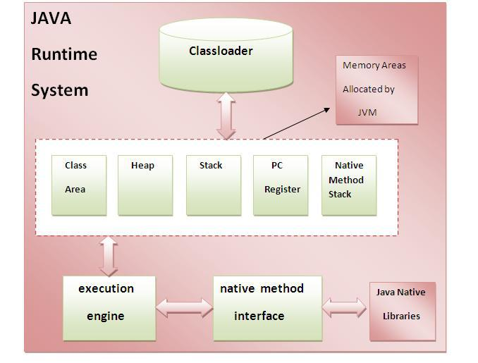
- JRE (Java Runtime Environment)
- JRE is the implementation of JVM and it provides runtime environment. JRE = JVM + libraries etc.
- JDK (Java Development Kit)
- JDK = JRE + development tools
11.2 Java Basics
- Variable
- A variable is name of reserved area allocated in memory.
- Three types of variables
- (1) local variable: declared inside a method. (2) instance variable: declared inside a class but outside the method. (3) static variable: declared as static; cannot be local.
- Data types
- 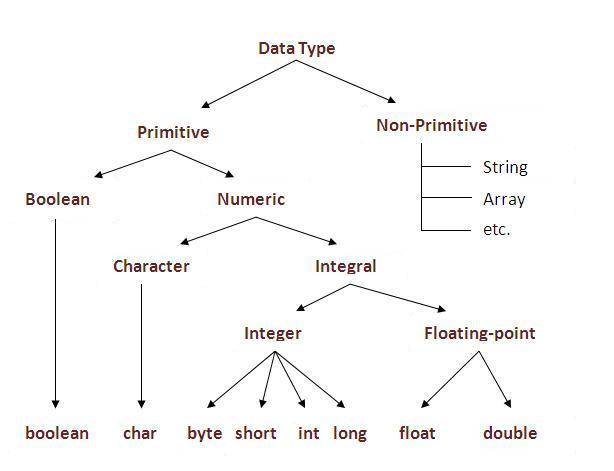
- Operators
- shift >>>
12 C++
12.1 Pitfalls in C++
Here I record some mistakes that are very easy to make in C++.
12.1.1 Overflow and Underflow
- Avoid adding two
intnumber when an easy alternative exists
int mid = (left + right) / 2;
12.1.2 Implicit cast
inttounsignedA signed number is implicitly cast into unsigned before adding, and it may cause counter-intuitive results:
assert(0U - 1 == -1); assert(0U - 1 > 0);
A common bug could occur when you want to loop through from the first to the second last element of a vector. Since
size()is unsigned, and if the vector is empty, the loop will not be skipped.vector<int> xx; // Empty for(size_t i = 0; i < xx.size() - 1; ++i){ // Loop will not stop until i = 4294967295 } for(size_t i = 0; i + 1 < xx.size(); ++i){ // Loop will be skipped (avoid adding int with unsigned) }
inttoboolintwill be implicitly cast intobool. If you mistakenly type&as&&, then it still compiles but lead to different result.int x = 0x0f, y = 0xf0; assert((x & y) == 0); assert((x && y) == 1);
12.1.3 Vector
- When initializing a nested vector,
{}is NOT the same as{{}}.{}is an empty vector, while{{}}is a size-1 vector containing an empty list. - It is always easy to forget that vector does NOT check index bound. If you are not confident with the index, use
at().
vector<int> xx = {0,1}; try{ cout << xx.at(99); }catch(out_of_range e){ // If out of range, at() will raise exception. }
- C++ does not check iterator bound either. Dereferencing an out-of-range iterator will occur segmentation fault.
- The input range for a STL algorithm is a close-open range (NOT including the later iterator).
xx = {0,1,2,3,4}; vector<int> sub (xx.begin() + 1, xx.begin() + 3); assert(sub == vector<int> ({1,2}));
12.1.4 Char
- In C++ char type is more like integer.
assert( to_string('a') != "a" ); assert( to_string('a') == "97" );
- Char can be used to index an array syntactically, hiding some serious bugs
vector<int> xx = {0, 1, 2, 3}; assert( & xx['1'] != & xx[1] ); assert(string('1', 65) == "AAAAAAAAAAAAAAAAAAAAAAAAAAAAAAAAAAAAAAAAAAAAAAAAA");
12.2 Causes of Segmentation Fault
- Out-of-range iterator
- Uninitialized pointer
pop()on an empty stack or queue.
12.3 Advanced Techniques
12.3.1 Static local variable
Initialization of a static local variable will be executed only once, and the variable keeps its value until the program exits.
// Use static local variable to reduce scope vector<int> xx (10, 0); for(int & x : xx){ static int cnt = 0; x = cnt++; } // Use static local variable in a function to pass information of last function call void increment(){ static int cnt = 0; cnt++; }
13 Others
13.1 Software Installation
- Emacs
brew install emacs --HEAD --with-cocoa --with-gnutls --with-imagemagick
If you prefer a stable version, use brew cask install emacs to install from a stable binary release.
- Openmp
- The
gccthat comes with Mac OS does not contain OpenMP, so we need to reinstall it:brew reinstall gcc --without-multilibThen use the newly installedg++-6or other later version.